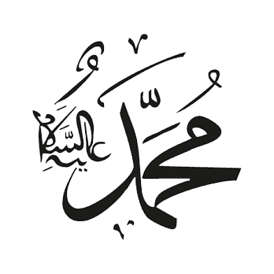

<!DOCTYPE html>
<html lang="en">

<head>
    <meta charset="UTF-8">
    <meta http-equiv="X-UA-Compatible" content="IE=edge">
    <meta name="viewport" content="width=device-width, initial-scale=1.0">
    <title>About Page</title>
</head>

<body bgcolor="83CA56">
    <marquee direction="left" <strong>
        <em>
            Welcom to Hazrat Muhammad(s.) About. This Site is under construction. Thanks For Visit.
            </em>
        </strong>
    </marquee>
    <hr color="78BBfd">
    <header>
        <div>
            
        </div>
        <div>
            <nav>
                <a href="./index.html" target="_blank">HOME</a>&nbsp;&nbsp;&nbsp;&nbsp;
                <a href="./about.html" target="_blank">ABOUT</a>&nbsp;&nbsp;&nbsp;&nbsp;
                <a href="./hadith.html" target="_blank">HADITH</a>&nbsp;&nbsp;&nbsp;&nbsp;
                <a href="./login.html" target="_blank">LOGIN</a>&nbsp;&nbsp;&nbsp;&nbsp;
            </nav>
        </div><br>
        <div>
            <input type="text" placeholder="Search here..">
            <button>Search</button>
        </div>
    </header>
    <hr color="DHH2FH">
    <main>
        <section>
            <div align="center">
                <h1><u><b>Detailed introduction of the Prophet (peace and blessings of Allaah be upon him)</b></u></h1>
                
            </div>
        </section>

        <section>

            <div>
                <h2><u>The Children of Ishmael</u></h2>
                <p>
                    Over the years Ishmael's children themselves had children. His descendants increased and formed tribes which spread out all over Arabia. One of these tribes was called Quraysh. Its people never moved away from Mecca and always lived near the Ka'bah. One
                    of the duties of the leader of Quraysh was to look after those who came on pilgrimage to the Ka'bah. The, pilgrims would come from all over Arabia and it was a great honor to provide them with food and water.
                </p>
                <p>
                    &nbsp;&nbsp;&nbsp;&nbsp;&nbsp;As time passed, however, the Arabs stopped worshipping Allah directly and started bringing idols back with them from the different countries they visited. These idols were placed at the Ka'bah, which was no longer regarded
                    as the Sanctuary of Allah, as Abraham had intended it. It was, however, still respected by the Arabs. Around this time the well of Zamzam disappeared beneath the sand. Also at this time, Qusayy, one of the leaders of Quraysh, became
                    ruler over Mecca. He held the keys of the temple and had the right to give water to the pilgrims, to feed them, to take charge of meetings, and to hand out war banners before battle. It was also in his house that Quraysh settled their
                    affairs. After Qusayy's death, his son 'Abdu Manaf, who had become famous during his father's lifetime, took over the leadership of Quraysh. After him came his son Hashim. It is said that Hashim was the first to begin the two great
                    caravan journeys of Quraysh, one in the summer to Syria and the north, and one in the winter to Yemen and the south. As a result, Mecca grew rich and became a large and important centre of trade. One summer Hashim went north to buy
                    goods to sell in Yemen. On his way he stopped in Yathrib to trade in the market and there he saw a beautiful woman. She was Salma', the daughter of 'Amr ibn Zeid, who was from a much respected family. Hashim proposed marriage to her
                    and was accepted because he was an honorable and distinguished man.
                </p>
                <p>
                    &nbsp;&nbsp;&nbsp;&nbsp;&nbsp;In time, Salma' gave birth to a beautiful son and as some of his hair was white they called him Shaybah, which in Arabic means grey-haired'.
                </p>
                <p>
                    &nbsp;&nbsp;&nbsp;&nbsp;&nbsp; Mother and son stayed in the cooler, healthier climate of Yathrib, while Hashim returned to Mecca, but he would visit them each time he took his caravan to the north. During one of these journeys, however, Hashim became
                    ill and died. Shaybah, a handsome, intelligent boy, grew up in his uncle's house in Yathrib. He was proud of being the son of Hashim ibn 'Abdi Manaf, the head of Quraysh, guardian of the Ka'bah and protector of the pilgrims, even though
                    he had not known his father, who had died while Shaybah was very young.
                </p>
                <p>
                    &nbsp;&nbsp;&nbsp;&nbsp;&nbsp;At Hashim's death his brother al-Muttalib took over his duties and responsibilities. He traveled to Yathrib to see his nephew, Shaybah, and decided that as the boy would one day inherit his father's place, the time had come
                    for him to live in Mecca. It was hard for Salma', Shaybah's mother, to let her son go with his uncle but she finally realized that it was for the best. Al-Muttalib returned to Mecca, entering the city at noon on his camel with Shaybah
                    behind him. When the people of Mecca saw the boy they thought he was a slave and, pointing at him, called out „Abd alMuttalib', 'Abd' being the Arabic for 'slave'.
                </p>
                <p>
                    &nbsp;&nbsp;&nbsp;&nbsp;&nbsp;Al-Muttalib told them that Shaybah was not a slave but his nephew who had come to live with them. From that day on, however, Shaybah was always affectionately called Abd al-Muttalib. On the death of alMuttalib, who died
                    in Yemen where he had gone to trade, 'Abd alMuttalib took his place. He became the most respected member of his family, loved and admired by all. He was, however, unlike those Arabs who had given up the teachings of Abraham.
                </p>
            </div>
            <div>
                <h2><u>The Promise At Zamzam</u></h2>
                <p>
                    The well of Zamzam, which disappeared when the Arabs placed idols at the Ka'bah, remained buried under the sand. Thus, for many years the people of Quraysh had to fetch their water from far away. One day 'Abd al-Muttalib was very tired from doing this
                    and fell asleep next to the Ka‟bah. He had a dream in which he was told to dig up Zamzam. When he woke up he was puzzled because he did not know what Zamzam was, the well having disappeared many years before he was born. The next day
                    he had the same dream, but this time he was told where to find the well. 'Abd al-Muttalib had one son at that time, and together they began to dig. The work was so difficult that „Abd al-Muttalib made an oath to Allah that if one day
                    he were to have ten sons to help him and stand by him, in return he would sacrifice one of them in Allah's honor. After working for three days they finally found the well of Zamzam. Pilgrims have been drinking from it ever since. The
                    years passed by and 'Abd alMuttalib did have ten sons. They grew into fine, strong men and the time came for him to keep his promise to Allah. He told his sons about the promise and they agreed that he had to sacrifice one of them
                    To see which one it would be, they decided to draw lots, which was the custom of Quraysh when deciding important matters. 'Abd al-Muttalib told each son to get an arrow and write his own name upon it and then to bring it to him. This
                    they did, after which he took them to the Ka'bah where there was a man whose special task it was to cast arrows and pick one from among them. This man solemnly proceeded to do this. On the arrow he chose was written the name of 'Abd
                    Allah, the youngest and favorite son of 'Abd al-Muttalib. Even so, the father took his son near the Ka'bah and prepared to sacrifice him.
                </p>
                <p>
                    &nbsp;&nbsp;&nbsp;&nbsp;&nbsp; Many of the Quraysh leaders were present and they became very angry because 'Abd Allah was very young and much loved by everyone. They tried to think of a way to save his life. Someone suggested that the advice of a wise
                    old woman who lived in Yathrib should be sought, and so 'Abd al-Muttalib took his son and went to see if she could decide what to do. Some of the Meccans went with them and when they got there the woman asked, 'What is the price of
                    a man's life?' They told her, 'Ten camels', for at that time if one man killed another, his family would have to give ten camels to the dead man's family in order to keep the peace among them. So the woman told them to go back to the
                    Ka‟bah and draw lots between 'Abd Allah and ten camels. If the camels were chosen, they were to be killed and the meat given to the poor. If 'Abd Allah was picked then ten more camels were to be added and the lots drawn again and again
                    until they finally fell on the camels.
                </p>
                <p>
                    &nbsp;&nbsp;&nbsp;&nbsp;&nbsp;„Abd al-Muttalib returned to the Ka‟bah with his son and the people of Mecca. There they started to draw lots between „Abd Allah and the camels, starting with ten camels. „Abd al-Muttalib prayed to Allah to spare his son
                    and everyone waited in silence for the result. The choice fell on „Abd Allah, so his father added ten more camels. Again the choice fell on „Abd Allah, so they did the same thing again and again, adding ten camels each time. Finally
                    they reached one hundred camels, and only then did the lot fall on the camels. „Abd Allah was saved and everyone was very happy. 'Abd al-Muttalib however, wanted to make sure that this was the true result so he repeated the draw three
                    times and each time it fell on the camels. He then gave thanks to Allah that He had spared „Abd Allah's life. The camels were sacrificed and there was enough food for the entire city, even the animals and birds. 'Abd Allah grew up
                    to be a handsome young man and his father eventually chose Aminah, the daughter of Wahb, as a wife for him. It was a good match for she was the finest of Quraysh women and 'Abd Allah the best of the men. He spent several months with
                    his wife but then he had to leave her and travel with one of the caravans to trade with Syria. On his way back to Mecca from Syria 'Abd Allah became ill and had to stop off in Yathrib to recover. The caravan, however, continued on
                    its way and arrived back in Mecca without him. On hearing of 'Abd Allah's illness, „Abd al-Muttalib sent another son, al-Hareth, to bring 'Abd Allah back to Mecca, but he was too late.
                </p>
                <p>
                    &nbsp;&nbsp;&nbsp;&nbsp;&nbsp;When he arrived in Yathrib „Abd Allah was dead. Aminah was heartbroken to lose her husband and the father of the child she would soon give birth to. Only Allah knew that this orphan child would one day be a great Prophet.
                </p>
            </div>
            <div>
                <h2><u>The Elephant Refuses To Move</u></h2>
                <p>Abrahah, who came from Abyssinia-a country in Africa-conquered Yemen and was made vice-regent there. Later, he noticed that at a certain time of the year large numbers of people would travel from all over Yemen and the rest of Arabia to
                    Mecca. He asked the reason for this and was told that they were going on pilgrimage to the Ka'bah. Abrahah hated the idea of Mecca being more important than his own country, so he decided to build a church of colored marble, with doors
                    of gold and ornaments of silver, and ordered the people to visit it instead of the Ka'bah. But no one obeyed him. Abrahah became angry and decided to destroy the Ka1bah. He prepared a large army led by an elephant and set off towards
                    Mecca. When the Meccans heard that he was coming they became very frightened. Abrahah's army was huge and they could not fight it. But how could they let him destroy the Holy Ka'bah? They went to ask the advice of their leader, 'Abd
                    al-Muttalib. When Abrahah arrived outside Mecca, 'Abd al-Muttalib went to meet him. Abrahah said, 'What do you want?' Abrahah had taken Abd al-Muttalib's camels, which he had found grazing as he entered Mecca, so „Abd al-Muttalib replied,
                    'I want my camels back.' Abrahah was very surprised and said, 'I have come to destroy your Holy Ka‟bah, the holy place of your fathers, and you ask me about some camels?' 'Abd al-Muttalib replied calmly, „The camels belong to me; the
                    Ka‟bah belongs to Allah and He will protect it.' Then he left Abrahah and went back to Quraysh and ordered them to leave Mecca and wait for their enemies in the mountains.
                </p>
                <p>
                    &nbsp;&nbsp;&nbsp;&nbsp;&nbsp;In the morning Abrahah prepared to enter the town. He put armor on his elephant and drew up his troops for battle. He intended to destroy the Ka'bah and then return to Yemen. At that moment, however, the elephant knelt down
                    and refused to get up, no matter how much the soldiers tried to get it to move by beating it.
                </p>
                <p>
                    &nbsp;&nbsp;&nbsp;&nbsp;&nbsp;But when they turned its face in the direction of Yemen it immediately got up and started off. In fact, it did the same in any other direction, but as soon as they pointed it towards Mecca it knelt down again. Suddenly, flocks
                    of birds appeared from over the sea. Each bird carried three stones as small as peas and they dropped them on Abrahah1s army. The soldiers suddenly fell ill. Even Abrahah was hit by the stones and fled in fear with the rest of his
                    army back to Yemen, where he later died. On seeing their enemy flee the Arabs came down from the mountains to the Ka‟bah and gave thanks to Allah.

                </p>
                <p>
                    &nbsp;&nbsp;&nbsp;&nbsp;&nbsp;After this, Quraysh gained great respect and became known as 'the people of Allah', and the year in which these events took place, 570A.D, was named the 'Year of the Elephant'. In that year Allah had saved the Ka'bah and
                    he would soon bring forth a Prophet from among Quraysh. In the Name of Allah, the Beneficent, the Merciful: “Hast thou not seen how thy Lord dealt with the owners of the Elephant? Did He not bring their stratagem to naught, And send
                    against them swarms of flying creatures, Which pelted them with stones of baked clay, And made them like green crops devoured (by cattle)? (Qur'an 105.1-5
                </p>
            </div>
            <div>
                <h2><u>The Prophet Born</u></h2>
                <p>
                    One day, while travelling north, one of the Arab tribes from Mecca met a hermit in the desert. Some of the men stopped to speak with him. Hermits were known to be wise and the Arabs often asked their advice. The hermit asked where they had come from.
                    When they replied that they were from Mecca, he told them that Allah would soon send a prophet, who would come from their people. They asked the name of this prophet and the hermit answered that his name would be Muhammad and that
                    he would guide them to a new way of life.
                </p>
                <p>
                    &nbsp;&nbsp;&nbsp;&nbsp;&nbsp; Meanwhile in Mecca, Aminah, although saddened by the loss of her husband, felt especially well and strong as she awaited the birth of her baby. During this time she dreamt of many things. On one occasion it was as if a great
                    light were shining out of her, and on another she heard a voice telling her that she would have a boy and that his name would be Muhammad. She never forgot that voice but she told no one about it.
                </p>
                <p>
                    &nbsp;&nbsp;&nbsp;&nbsp;&nbsp;On Monday, the twelfth day of Rabi al-Awwal in the Year of the Elephant, Aminah gave birth to a son. Allah sends man many signs when one of His chosen Prophets is born and on that twelfth day of Rabi alAwwal in the year
                    570 A.D, many such signs were seen. Some were seen by Jewish scholars who had read in their scriptures of a coming Prophet. One of these learned men in Yathrib, for instance, saw a brilliant new star he had never seen before as he
                    studied the heavens that night. He called the people around him and, pointing the star out to them, told them a Prophet must have been born. That same night another Jew was passing by the meeting place of the leaders of Quraysh in
                    Mecca. He asked them if a baby boy had just been born and told them that if it were true, this would be the Prophet of the Arab nation.
                </p>
                <p>
                    Aminah sent news of the birth to her father-in-law, 'Abd al-Muttalib, who was sitting near the Ka'bah at the time. He was very happy and began at once to think of a name for the boy. An ordinary name would not do. Six days came and went and still he had
                    not decided. But on the seventh day, as he lay asleep near the Ka‟bah, 'Abd al-Muttalib dreamt that he should give the baby the unusual name of Muhammad, just as Aminah herself had dreamt. And the child was called Muhammad (pbuh),
                    which means 'the Praised One'. When 'Abd al-Muttalib told the leaders of Quraysh what he had named his grandson, many of them asked, 'Why did you not choose the sort of name that is used by our people?' At once he replied, 'I want
                    him to be praised by Allah in the heavens and praised by men on earth.
                </p>
            </div>
            <div>
                <h2><u>A Time With Halimah</u></h2>
                <p>
                    Like many other women in Mecca, Aminah decided to send her son away from the city for his early years to the desert where it was more healthy. Women from the desert used to come to Mecca to collect the new babies and they would then keep them until they
                    developed into strong children, for which they were well paid by the parents.
                </p>
                <p>
                    &nbsp;&nbsp;&nbsp;&nbsp;&nbsp;Among the women who traveled to Mecca to fetch a new baby at the time Aminah's son was born, was a Bedouin woman called Halimah. With her was her husband and baby son. They had always been very poor but this year things were
                    harder than ever because there had been famine. The donkey that earned Halimah on the journey was so weak from hunger that he often stumbled. Halimah's own baby son cried all the time because his mother could not feed him properly.
                    Even their she-camel did not give them one drop of milk. Halimah did not know what to do. She thought to herself, 'How can I possibly feed another baby when I haven't got enough milk even for my own son?'
                </p>
                <p>
                    &nbsp;&nbsp;&nbsp;&nbsp;&nbsp;At last they reached Mecca. All the other women of the tribe to which Halimah belonged, the Bani Sa'd, found a child to take back with them, but not Halimah. The only baby left was Muhammad (pbuh). Usually the father paid
                    the wet-nurse but Mohammed‟s father was dead. So no one wanted to take him, even though he was from one of the noblest families of Quraysh. Halimah did not want to take him either, but she did not want to be the only woman to go back
                    to her tribe without a baby to bring up. She asked her husband whether she should take Muhammad (pbuh) or not. He advised her to do so, adding, 'Perhaps Allah will bless us because of him.' They started on the return journey and as
                    soon as Halimah began to feed Muhammad (pbuh) her milk suddenly increased and she had enough for him as well as her baby son. When they were back home, everything began to change.
                </p>
                <p>
                    &nbsp;&nbsp;&nbsp;&nbsp;&nbsp;The land became green, and the date trees, one of their main sources of food, gave lots of fruit. Even the sheep and their old she-camel began to give plenty of milk.
                </p>
                <p>
                    &nbsp;&nbsp;&nbsp;&nbsp;&nbsp;Halimah and her husband knew that this good fortune had come because they had the new baby, Muhammad (pbuh), whom they had come to love as if he were their own son.
                </p>
                <p>
                    &nbsp;&nbsp;&nbsp;&nbsp;&nbsp;When Muhammad (pbuh) was two years old, Halimah took him back to his mother. She pleaded with Aminah, however, to let her keep him for a little longer, and to her great joy the mother agreed. During his time with Halimah's
                    family in the desert, Muhammad (pbuh) played with her children and together they would take the sheep out to graze. At other times, however, Halimah would often find him sitting alone. It is said that on one occasion, two angels came
                    to Muhammad (pbuh) and washed his heart with snow. In this way Allah made his heart pure for He intended Muhammad (pbuh) to be greater than any man ever born and to become the Seal of the Prophets.
                </p>
                <p>
                    <em>In the Name of Allah the Beneficent, the Merciful</em> &nbsp;&nbsp;&nbsp;&nbsp;&nbsp;“Did We not expand thy breast for thee And eased thee of thy burden Which weighed down thy back; And exalted thy fame? So truly with hardship
                    comes ease, Truly with hardship comes ease. So when thou art relieved, still toil And strive to please thy Lord. (Qur'an 94.1-8)
                </p>
                <p>
                    &nbsp;&nbsp;&nbsp;&nbsp;&nbsp;When Halimah finally took Muhammad (pbuh) back to Aminah, he was a healthy, strong boy. Later he would look back with joy on the time he had spent with Halimah, and he always thought of himself as one of the Bani Sa'd.
                </p>
            </div>
            <div>
                <h2><u>The Orphan's Childhood</u></h2>
                <p>
                    Muhammad (pbuh) returned to live with his mother in Mecca when he was about three years old. Three years later Aminah decided to take her son to visit his uncles in Yathrib. She told her maid, Barakah, to prepare everything they would need for the long
                    journey, and then they joined one of the caravans going there. They stayed in Yathrib a month and Muhammad (pbuh) enjoyed the visit with his cousins. The climate there was very pleasant and he learned to swim and to fly a kite. On
                    their way back to Mecca, however, Aminah became ill and died. She was buried in the village at al-Abwa not far from Yathrib. Muhammad (pbuh) returned sadly to Mecca with his mother's maid He was now six years old and had lost both
                    his father and mother. He was then adopted by his grandfather, „Abd al-Muttalib, who loved him dearly and kept him by his side at all times. It was the custom of 'Abd al-Muttalib to sit on a blanket near the Ka‟bah. There he was always
                    surrounded by people who had come to speak to him. No one was allowed to sit on the blanket with him, however, except his grandson Muhammad (pbuh), which shows how close they were to each other. Many times 'Abd al-Muttalib was heard
                    to say: 'This boy will be very important one day.'
                </p>
                <p>
                    &nbsp;&nbsp;&nbsp;&nbsp;&nbsp;Two years later 'Abd al-Muttalib became ill and Muhammad (pbuh) stayed by him constantly. 'Abd al-Muttalib told his son, Abu Talib, to adopt Muhammad (pbuh) after his death, which he did. Abu Talib had many children of his
                    own, but Muhammad (pbuh) immediately became part of his family and the favorite child. The time came for Quraysh to prepare a caravan to go to Syria. Abu Talib was going with them and he took Muhammad (pbuh) along. It was Mohammed‟s
                    first journey to the north. After days of travel, the caravan arrived at a place near Syria where the Romans used to come to trade with the Arabs. Near this marketplace lived a monk called Bahira‟. His cell had been used by generations
                    of monks before him and contained ancient manuscripts.
                </p>
                <p>
                    &nbsp;&nbsp;&nbsp;&nbsp;&nbsp;Bahira' saw the caravan in the distance and was amazed to see that over it was a large white cloud. It was the only cloud in a clear blue sky and it appeared to be shading one of the travelers. The monk was even more surprised
                    to see that the cloud seemed to follow the caravan but disappeared when the person it was shading sat down under a tree. Bahira‟ knew from the scriptures that a prophet was expected to come after Jesus and it had been his wish to see
                    this prophet before he died. Realizing that what he had just seen was a miracle, he began to think that his wish might, after all, come true.
                </p>
                <p>
                    &nbsp;&nbsp;&nbsp;&nbsp;&nbsp;The monk sent an invitation to the Meccans to come and eat with him. The Arabs were surprised because they often passed by and Bahira‟ had never invited them before. When the group was all together for the meal, the monk
                    said, 'Is this everyone?‟ 'No', someone said, 'a boy was left watching the camels.' Bahira‟ insisted that the boy should join them. The boy was Muhammad (pbuh). When he arrived Bahira‟ said nothing, but watched him all through the
                    meal. He noticed many things about his appearance which fitted the description in the old manuscripts. Later on he took him aside and asked Muhammad (pbuh) many questions. He soon found out how he felt about the idols in the Ka'bah.
                    When Bahira tried to make him swear by them, as the Arabs used to do, Muhammad (pbuh) said, 'There is nothing in this world that I hate more'. They talked together about Allah and about Mohammed‟s life and family. What was said made
                    Bahira certain that this was indeed the Prophet who would follow Jesus.
                </p>
                <p>
                    &nbsp;&nbsp;&nbsp;&nbsp;&nbsp;Then the monk went to Abu Talib and asked him how he was related to Muhammad (pbuh). Abu Talib told him that Muhammad (pbuh) was his son. Bahira replied that this could not be so because the boy was destined to grow up an
                    orphan, and he ordered Abu Talib to watch over Muhammad (pbuh) with great care. There are many stories told about Mohammed‟s youth. Some tell of how he used to take the family's sheep to graze and was always kind to them. While they
                    grazed he would sit thinking about the mysteries of nature. Unlike those around him1 he never worshipped the idols and never swore by them. He also wondered why people were always struggling for power and money, and this saddened him
                    and made him feel lonely, but he kept his feelings to himself. He was a quiet, thoughtful boy, and rarely played with other boys of his age. On one occasion, however, Muhammad (pbuh) went with some of the boys to a wedding in Mecca.
                    When he reached the house he heard the sounds of music and dancing but just as he was about to enter he suddenly felt tired and, sitting down, fell asleep. He didn't wake up until late the next morning and thus missed the celebrations.
                    In this way Allah prevented him from doing anything foolish for He was keeping Muhammad (pbuh) for something much more important

                </p>
            </div>
            <div>
                <h2><u>The Prophet's Marriage</u></h2>
                <p>
                    By the time Muhammad (pbuh) was twenty-five he was famous for his honesty. He was respected by everyone, even the elders of Mecca. The purity of his nature increased with the years. It seemed he had an inner knowledge that other people did not have. He
                    believed in one GodCreator of the world-and he worshipped Him with all his heart and with all his soul. Muhammad (pbuh) was the finest of his people, the most kind, truthful and reliable person in Mecca. He was known among Quraysh
                    as 'the trustworthy' (al-Amin) because of the good qualities Allah had given him. He spent many quiet hours in a cave in Mount Hira, not far from Mecca, thinking about Allah. Among Quraysh was a respected and wealthy woman named Khadijah.
                    She was involved in trade and on hearing of Mohammed‟s reputation, sent for him and asked him to take her goods and trade with them in Syria. Muhammad (pbuh) agreed and left for Syria with one of Khadijah's caravans. With him went
                    her slave, Maysarah, and they spent a great deal of time talking together. Maysarah soon came to admire Muhammad (pbuh). He thought he was quite different from all the other men of Quraysh. Two unusual events took place during this
                    journey which puzzled Maysarah very much. The first happened when they stopped to rest near the lonely home of a monk. Muhammad (pbuh) sat under a tree while Maysarah was busy with some work. The monk came up to Maysarah and asked,
                    'Who is the man resting under the tree?' 'One of Quraysh, the people who guard the Ka‟bah', said Maysarah. 'No one but a Prophet is sitting beneath this tree', replied the monk. The second event occurred on the journey back to Mecca.
                    It happened at noon, when the sun is at its hottest. Maysarah was riding behind Muhammad (pbuh) and as the sun grew hotter he saw two angels appear above Muhammad (pbuh) and shield him from the sun's harmful rays. The trading was very
                    successful and Muhammad (pbuh) made more profit for Khadijah than she had ever received before. When they arrived back in Mecca Maysarah told Khadijah everything about the trip and what he had noticed about Mohammed‟s character and
                    behavior. Khadijah was a widow in her forties and as well as being rich and highly respected she was also very beautiful.
                </p>
                <p>
                    &nbsp;&nbsp;&nbsp;&nbsp;&nbsp;Many men wanted to marry her but none of them suited her. When she met Muhammad (pbuh), however, she thought he was very special. She sent a friend to ask Muhammad (pbuh) why he was not married. Muhammad (pbuh) said that
                    it was because he had no money, to which the friend replied: 'Supposing a rich, beautiful and noble lady agreed to marry you?' Muhammad (pbuh) wanted to know who that could be. The friend told him it was Khadijah. Muhammad (pbuh) was
                    very happy, because he greatly respected Khadijah. He went with his uncles, Abu Talib and Hamzah, to Khadijah's uncle, and asked his permission to marry her. The uncle gave his permission and soon after, Muhammad (pbuh) and Khadijah
                    were married.
                </p>
                <p>
                    &nbsp;&nbsp;&nbsp;&nbsp;&nbsp;Their marriage was a joyful one and Muhammad (pbuh) and Khadijah were well suited. Their life together, however, was not without some sadness. They were blessed with six children, two sons and four daughters. Sadly their
                    first born, a son called Qasim, died shortly before his second birthday, and their last child, also a son, only lived for a short time. Happily, their four daughters-Zaynab, Ruqayyah, Umm Kulthum, and Fatimah-all survived.
                </p>
                <p>
                    &nbsp;&nbsp;&nbsp;&nbsp;&nbsp;For a few years Muhammad (pbuh) lived a calm and quiet life as a merchant in Mecca. His wisdom benefited many people. One such time was when Quraysh decided to rebuild the Ka‟bah. It was a difficult decision for them because
                    they had to knock it down before rebuilding it and the people were afraid that Allah might be angry with them for knocking down His sanctuary. At last one of the wise old men of Quraysh decided to begin, then everybody followed him.
                    They worked until they reached down to the first foundation that Abraham had built. As soon as they began to remove the stones of this foundation, however, the whole of Mecca began to shake.
                </p>
                <p>
                    &nbsp;&nbsp;&nbsp;&nbsp;&nbsp;They were so afraid that they decided to leave these stones where they were and build on top of them. Each tribe brought stones and they built the Ka'bah up until they reached the place where the black stone was to be set.
                    They then began to argue about who should have the honor of carrying the black stone and lifting it to its place in one of the corners of the Ka'bah.
                </p>
                <p>
                    &nbsp;&nbsp;&nbsp;&nbsp;&nbsp;They almost came to blows but fortunately one of the men offered a solution. He suggested that they should be guided by the first person to enter the place of worship. They all agreed and as Muhammad (pbuh) was the first
                    to enter everyone was pleased, because they all trusted him. They told him the cause of the argument and he asked them to bring a large cloak. They did as he asked, and after spreading the cloak on the ground he placed the black stone
                    in the centre of it. Then he asked a man from each tribe to hold one edge of the cloak and together to raise it to the height where the stone should be see. When this was done, he took the stone off the cloak and put it into place
                    himself. This story shows how all Quraysh respected and trusted Muhammad (pbuh) and how, by his wisdom and good sense, he was able to keep the peace.
                </p>
            </div>
            <div>
                <h2><u>The Coming of The Archangel Gabriel</u></h2>
                <p>Muhammad (pbuh) believed that there was only one Allah, Creator of the sun, the moon, the earth, the sky, and of all living things, and that all people should worship only Him. Muhammad (pbuh) would often leave the crowded city and go
                    to the cave in Mount Hira'. He liked to be alone there, away from all thoughts of the world and daily life, eating and drinking little. In his fortieth year, Muhammad (pbuh) left Mecca to spend Ramadan, the traditional month of retreat,
                    in the cave. In the second half of Ramadan, Allah began to reveal His message for mankind through Muhammad (pbuh). This first Revelation occurred as follows. The Archangel Gabriel came to Muhammad (pbuh) in the cave and commanded him
                    to 'Read'. Muhammad (pbuh) replied 'I cannot read.' At this the Archangel took Muhammad (pbuh) in his arms and pressed him to him until it was almost too much to bear. He then released him and said again 'Read.' 'I cannot', replied
                    Muhammad (pbuh), at which the Archangel embraced him again. For the third time the Archangel commanded Muhammad (pbuh) to read, but still he said he could not and was again embraced. On releasing him this time, however, the Archangel
                    Gabriel said:</p>
                <p>
                    &nbsp;&nbsp;&nbsp;&nbsp;&nbsp;“Read: In the Name of thy Lord who createth, Createth man from a clot. Read: And thy Lord is the Most Generous Who teacheth by the pen, Teacheth man that which he knew not. (Qur'an 96.1-5) Muhammad (pbuh) repeated these verses,
                    just as the Archangel had said them. When the Archangel was sure Muhammad (pbuh) knew them by heart, he we away. Now that he was alone Muhammad (pbuh) could not understand what had happened to him. He was terribly afraid and rushed
                    out of the cave. Perhaps the cave was haunted? Perhaps the devil had taken a hold of his mind? But he was stopped by a voice from heaven which said; '0 Muhammad (pbuh) you are the Messenger of Allah, and I am Gabriel.' He looked up
                    at the sky and wherever he turned he saw the Archangel Gabriel. In a state of confusion he returned home to Khadijah. When his wife saw him she became very worried as he began to shiver, as though in a fever. He asked her to wrap him
                    in blankets, which she did. After a while he recovered sufficiently to tell her what had happened at Hira'. Khadijah believed all that he told her and with great respect said: 'Be happy, 0 son of my uncle and be confident. Truly I
                    swear by Allah who has my soul in His hands, that you will be our people's Prophet.' Muhammad (pbuh), the Messenger of Allah, was eased by her faith in him, but after all that had happened he was exhausted and felt fast asleep.
                </p>
                <p>
                    &nbsp;&nbsp;&nbsp;&nbsp;&nbsp;Khadijah left the Prophet (pbuh) sleeping and went to see her cousin, Waraqah Ibn Nawfal, to ask him what he thought about all that had happened. Waraqah was a very wise man who had read many books and had become a Christian
                    after studying the Bible. He told Khadijah that Muhammad (pbuh) had been chosen by Allah to be His Messenger. Just as the Archangel Gabriel had come to Moses before and had ordered him to guide his people, so, too, would Muhammad (pbuh)
                    be the Prophet of his people. But Waraqah warned that all the people would not listen to the Prophet and some would mistreat his followers. He must, however, be patient because he had a great message for all the world. From that day
                    on, the Archangel Gabriel came often to the Prophet (pbuh) and the verses he taught him, the message from Allah to man, were later written down, and are known to us as the Holy Qur'an
                </p>
            </div>
            <div>
                <h2><u>The First Muslims</u></h2>
                <p>
                    After that momentous day in the month of Ramadan, Revelation came again and again to the Prophet (pbuh). He understood now what he had to do and prepared himself for what was to come. Only a strong and brave man, helped by Allah, can be a true prophet
                    because people often refuse to listen to Allah's message. Khadijah was the first to believe the Prophet (pbuh) and accept as true what he brought from Allah. Through her, Allah made things easier for the Prophet (pbuh). Khadijah strengthened
                    him, helped him spread his message, and stood up to the people who were against him.
                </p>
                <p>
                    &nbsp;&nbsp;&nbsp;&nbsp;&nbsp;Then Revelation ceased for a time. The Prophet (pbuh) was upset and unhappy, thinking that Allah had left him, or that he might have angered Allah in some way so that Allah no longer thought him worthy of His message. However,
                    the Archangel Gabriel came back to him and brought this surah, or chapter, of the Qur'an:
                </p>
                <p>
                    In the Name of Allah, the Beneficent, the Merciful <br> &nbsp;&nbsp;&nbsp;&nbsp;&nbsp;“By the morning hours, And by the night when it is stillest, Thy Lord hath neither forsaken thee nor doth He hate thee, And verily the Last will
                    be better for thee than the First. And verily thy Lord will give unto thee so that thou wilt be content. Did He not find thee an orphan and protect thee? Did He not find thee wandering and guide thee? Did He not find thee destitute
                    and enrich thee? Therefore the orphan oppress not, Therefore the beggar drive not away, And as for thy Lord's blessing, declare it”. (Qur'an: 93.1-11)
                </p>
                <p>
                    &nbsp;&nbsp;&nbsp;&nbsp;&nbsp;The Prophet (pbuh) began to speak secretly of Allah's message to those Who were close to him and whom he could trust. At that time Mecca was going through hard times. There was very little food to be had. Abu Talib, the Prophet's
                    uncle, who had taken care of him after his grandfather's death, was finding it very difficult to feed his large family.
                </p>
                <p>
                    &nbsp;&nbsp;&nbsp;&nbsp;&nbsp;The Prophet (pbuh) said that he and another uncle, al-'Abbas, who was a rich man, would each bring up one of Abu Talib's children in order to help him. The Prophet (pbuh) took „Ali and his uncle took Ja‟far. One day, when
                    the Prophet (pbuh) was outside the city, the Archangel Gabriel appeared to him. The Archangel kicked the side of a hill and a spring of water began to flow out. He then began to wash himself in the running water to show the Prophet
                    (pbuh) the ritual ablution to be made before prayer. Then the Archangel showed him all the positions of Muslim prayer-the various movements and things to be said with each movement. The Prophet (pbuh) returned home and taught all these
                    things first to Khadijah and then to his followers. Since then Muslims have continued to purify themselves before prayer by performing the ritual ablution and have followed the same movements and prayers first performed by the Prophet
                    (pbuh). To begin with, though, only the Prophet (pbuh) and his wife knew of these things. Then one day „Ali entered the room and found the Prophet (pbuh) and Khadijah praying. He was puzzled and asked what they were doing. The Prophet
                    (pbuh) explained to him that they were praising Allah and giving thanks to Him. That night 'Ali stayed up thinking about all that the Prophet (pbuh) had said; he had great admiration and respect for his cousin. Finally he came to a
                    decision and the next day he went to the Prophet (pbuh) and told him that he wanted to follow him. Thus Khadijah was the first woman to embrace Islam, the teachings which the Prophet (pbuh) brought from Allah, and „Ali was the first
                    young man. Shortly after they were joined by Zayd ibn Harithah, a slave, freed and adopted by the Prophet (pbuh).
                </p>
                <p>
                    &nbsp;&nbsp;&nbsp;&nbsp;&nbsp;The Prophet (pbuh) began to leave Mecca with 'An in order to pray. One day Abu Talib happened to pass by and when he saw them he stopped and asked them what they were doing. The Prophet (pbuh) told him that they were praying
                    and following the same religion as Abraham. He explained that, like Abraham, he had been ordered to guide the people to Allah's truth. Abu Talib looked at his son, 'Ali, and said: 'Muhammad (pbuh) would never make you do anything that
                    was wrong. Go with him.
                </p>
                <p>
                    &nbsp;&nbsp;&nbsp;&nbsp;&nbsp;But I cannot leave the religion I now follow and which was followed by my father.' Then he turned to the Prophet (pbuh), saying, 'Even so, I promise you, Muhammad (pbuh), that no one will hurt you as long as I am alive.'
                    And with that Abu Talib went on his way. At about this time the news of Muhammad (pbuh) being the Prophet reached an honest, wise, and respected merchant of Mecca called Abu Bakr. He knew Muhammad (pbuh) well and believed he could
                    never lie, so he went to find out for himself if the story were true. The Prophet (pbuh) told him that he had indeed been sent by Allah to teach everyone to worship the one true Allah. On hearing this from the Prophet's own lips Abu
                    Bakr knew it to be the truth and became a believer instantly. Later the Prophet (pbuh) was reported to have said that everyone he ever invited to accept Islam showed signs of disbelief and doubt, except Abu Bakr; when he was told of
                    it he did not hold back or hesitate. Because of his wisdom, honesty, and kindness people had always turned to Abu Bakr for advice. He was, therefore, a man of some influence and through him many people came to Islam. Among these was
                    Sa'd ibn Abi Waqqas as, the uncle of Aminah, the Prophet's mother. The night before Abu Bakr came to visit him and tell him about Islam, Sa'd Ibn Abi Waqqas dreamt that he was walking in darkness. As he walked he saw the moon and when
                    he looked at it he saw 'Ali, Abu Bakr, and Zayd, the Prophet's freed slave, beckoning to him to come and join them. When Abu Bakr told him about the Prophet's religion, he understood the meaning of his dream and went at once to the
                    Prophet (pbuh) and declared himself a Muslim. He understood that to be a Muslim means to submit oneself to Allah's Will and to serve only Him. Another person brought to Islam by Abu Bakr was Bilal. One night Abu Bakr went to the house
                    of Umayyah ibn Khalaf, one of the most important men of Quraysh. Umayyah was out and Abu Bakr found only Umayyah's slave, Bilal, at home. Abu Bakr talked to the slave about Islam and before he left, Bilal, too, had become a Muslim.
                    The number of people following the Prophet (pbuh) began to grow. Sometimes they would all go out of the city to the mountains around Mecca to hear him recite the Qur'an and to be taught by him. This was all done very secretly and only
                    a very few people knew about Islam in those early days.
                </p>
            </div>
            <div>
                <h2><u>The Troubles Begin</u></h2>
                <p>
                    Three years passed and one day the Archangel Gabriel came to the Prophet (pbuh) and ordered him to start preaching openly to everyone. So the Prophet (pbuh) told the people of Mecca that he had something very important to tell them. He stood on a hillside
                    in Mecca, called Safa, and they gathered around to hear what he had to say. He started by asking them if they would believe him were he to say that an army was about to attack them. They answered that indeed they would, because he
                    never lied. He then told them that he was the Messenger of Allah, sent to show them the right way, and to warn them of terrible punishments if they did not follow him in worshipping only Allah and none other. Abu Lahab, one of the
                    Prophet's uncles who was among the listeners, suddenly stood up and said, 'May you perish! Did you call us here just to tell us this?' At this, Allah sent to the Prophet (pbuh) the following Surah:
                </p>
                <p>In the Name of Allah, The Beneficent, The Merciful <br> &nbsp;&nbsp;&nbsp;&nbsp;&nbsp;“The Power of Abu Lahab will perish, and he will perish. His wealth and gains will not save him. He shall roast at a flaming fire, And his wife, the
                    carrier of firewood Will have upon her neck a rope of palm-fibre”. (Qur'an 111.1-5)
                </p>
                <p>
                    &nbsp;&nbsp;&nbsp;&nbsp;&nbsp;“The Power of Abu Lahab will perish, and he will perish. His wealth and gains will not save him. He shall roast at a flaming fire, And his wife, the carrier of firewood Will have upon her neck a rope of palm-fibre”. (Qur'an
                    111.1-5)
                </p>
                <p>
                    &nbsp;&nbsp;&nbsp;&nbsp;&nbsp;Then the crowd dispersed and the Prophet (pbuh) was left alone. A few days later the Prophet (pbuh) tried again. A feast was prepared in his house for all of his uncles. After the meal he spoke to them and said, 'O sons of
                    'Abd al-Muttalib! I know of no Arab who has come to his people with a better message than mine. I have brought you the best news for this life and the next. Allah has ordered me to call you to Him. So which of you will help me?' All
                    the men kept silent. Then 'Ali, his cousin, jumped up and said: 'O Prophet of Allah! I will help you.' Then the men all got up and left, laughing as they went because only one young boy had agreed to help the Prophet (pbuh).
                </p>
                <p>
                    &nbsp;&nbsp;&nbsp;&nbsp;&nbsp; His message ignored by most of the people and his uncles, the Prophet (pbuh) continued to meet his friends secretly in a house near the hill of Safa. There they prayed together and he taught them about the religion of Islam.
                    But even though they kept to themselves, they were sometimes abused by those who would not believe. From one such incident, however, an unexpected conversion to Islam took place. One day, when the Prophet (pbuh) was returning home,
                    speaking with his followers, he met Abu Jahl, a leader of Quraysh, who hated the Prophet (pbuh) and his teachings. Abu Jahl started to insult him and to speak spitefully of Islam, but the Prophet (pbuh) made no reply and went on his
                    way.
                </p>
                <p>
                    &nbsp;&nbsp;&nbsp;&nbsp;&nbsp;Later, Hamzah, one of the Prophet's uncles, who was a strong and brave warrior of whom people were quite afraid, heard how his nephew had been insulted. Filled with rage, he ran straight to the Ka'bah where Abu Jahl was sitting
                    among the people and struck him a violent blow in the face with his bow. Hamzah then shouted, 'Will you insult him when I follow his religion, and I say what he says? Hit me back if you can!' Some people got up to help Abu Jahl but
                    he stopped them saying, 'Leave Hamzah alone, for by Allah, I have insulted his nephew badly. 'From that moment on Hamzah followed the teachings of the Prophet (pbuh) and with his conversion to Islam Quraysh realized that the Prophet
                    (pbuh) had a strong supporter and so for a while they stopped persecuting him. Soon, however, the leaders of Quraysh became angry again, when they saw that the Prophet (pbuh) was going ahead with his teaching. A group of them went
                    to his uncle, Abu Talib, who had promised to protect him. They told him to ask the Prophet (pbuh) to stop attacking their gods and their way of life, and in return they would let him do as he wished with his religion. After a time
                    they saw that there was no change, so they went back to Abu Talib and this time they told him that if he did not stop his nephew, they would fight them both. Abu Talib was very upset by this quarrel among his people, but he could not
                    break his word to his nephew. He sent for the Prophet (pbuh) and told him what had happened, saying, 'Spare me and spare yourself; do not put a greater burden on me than I can bear.' The Prophet (pbuh) thought that his uncle might
                    abandon him and that he would no longer have his support, but nevertheless he answered, '0 my uncle, by Allah, if they put the sun in my right hand and the moon in my left in return for my giving up this cause, I would not give it
                    up until Allah makes Truth victorious, or I die in His service. Abu Talib was deeply moved by this answer. He told the Prophet (pbuh) that he would support him for as long as he lived and encouraged him to go on spreading Allah's message.
                    From that time on, however hard the leaders of Quraysh tried to convince Abu Talib to stop protecting his nephew, he always refused to listen to them. In order to get rid of the Prophet (pbuh) and his followers, his enemies started
                    persecuting those Muslims who were poor or weak, or had no powerful friends. One such person was Bilal, the slave of Umayyah ibn Khalaf. His master would take him out into the desert, tie him up, and leave him in the sun with a large
                    stone on his chest. Fortunately Abu Bakr was passing by one day and saw Umayyah torturing Bilal, so he bought him from his master for a large sum of money and then set him free. But not all persecuted Muslims were as fortunate as Bilal.
                    Many suffered, but all of them endured it patiently, knowing that they were doing the right thing and that their reward in the life to come would be greater' than any happiness they could find on earth.
                </p>
            </div>
            <div>
                <h2><u>The Cruelty of Quraysh</u></h2>
                <p>
                    The leaders of Quraysh became increasingly worried about the way the people of Mecca were being divided by the Prophet's teachings. Finally, „Umar ibn al-Khattab, one of the nobles of Mecca, decided that the only way to silence the Prophet (pbuh) was
                    to kill him. Having made up his mind, he set out at once to look for him. On his way he met a man who saw at once what „Umar was going to do and said: 'Why don't you look a little closer to home before going to kill Muhammad? Don't
                    you know your own sister Fatimah is a Muslim?' 'Umar was shocked. He could not believe this was true. He went at once to his sister's house. When he arrived outside the house he heard Fatimah and her husband Sa‟id reading aloud surah
                    Ta Ha, a chapter from the Qur'an. Hearing her brother's voice at the door, Fatimah quickly hid the scroll with the surah written on it among the folds of her dress. „Umar stormed into the room and demanded, 'What is this nonsense I
                    heard?' Fatimah denied everything. „Umar then lost his temper and attacked Fatimah's husband shouting, 'They tell me that you have joined Muhammad in his religion!' Fatimah tried to defend her husband and „Umar hit her too. Then she
                    admitted, „Yes, we are Muslims and we believe in Allah and His Messenger and you can do what you like!'
                </p>
                <p>
                    &nbsp;&nbsp;&nbsp;&nbsp;&nbsp;Seeing her faith and courage, „Umar suddenly felt sorry for what he had done and said to his sister, 'Let me see what I heard you reading just now so that I may understand just what it is that your Prophet has brought. Fatimah
                    gave the scroll to him after he had washed to make himself clean and pure before touching it, and had promised to give it back to her afterwards.
                </p>
                <p>In the Name of Allah, the Beneficent, the Merciful <br> &nbsp;&nbsp;&nbsp;&nbsp;&nbsp;“Ta Ha We have not revealed unto thee (Muhammad) this Qur'an For thee to be distressed, but only as a reminder Unto him who fears a Revelation from Him
                    who created the earth and the high heavens; the Beneficent One Who is established on the Throne; To Him belongs Whatsoever is in the heavens and the earth And all that is between them, and All that is underneath the soil.
                </p>
                <p>
                    &nbsp;&nbsp;&nbsp;&nbsp;&nbsp;If Thou speakest aloud Be thou loud in thy speech, yet Surely He knows the secret (thought) And that yet more hidden. Allah There is no god but He To Him belong the Most Beautiful Names”. (Qur'an 20: 1-8) . As he read, 'Umar
                    suddenly knew that these were the most beautiful words he had ever heard and that this religion must be the true one. With his sword still in hand, he went straight to the Prophet's house and knocked loudly at the door. One of the
                    Prophet's closest followers looked out. There stood 'Umar who was known for his courage and strength. When he saw 'Umar so excited and with his sword in hand, he was afraid for the Prophet's life. But the Prophet (pbuh) asked him to
                    allow 'Umar to come in and to leave them alone together. The Prophet (pbuh) asked 'Umar why he had come, to which he replied: 'I have come to swear that there is no god but Allah and that you, Muhammad, are the Messenger of Allah.'
                    As he spoke these words, his hand still held the sword with which he had intended to kill the Prophet (pbuh). This same sword' would now be used to defend the Prophet (pbuh) and the faith of Islam. At that time, whenever Muslims wanted
                    to perform the ritual encircling of the Ka'bah, known as tawaf they had to do it secretly and in fear. 'Umar, however, was very courageous. As soon as he had declared his faith, he went directly to the Ka'bah and in broad daylight
                    made the circling of the Sacred House before the astonished people of Mecca. No one dared to say anything. But now the leaders of Quraysh became even more alarmed and began to see Islam as a threat to the whole life of the city of
                    Mecca. They grew more and more furious as the numbers of Muslims increased until finally they, too, decided as 'Umar once had, that the Prophet (pbuh) would have to be killed.
                </p>
                <p>
                    &nbsp;&nbsp;&nbsp;&nbsp;&nbsp;On hearing of these plans, Abu Talib, the Prophet's uncle, immediately sent a message to all the sons of 'Abd al-Muttalib, asking them to protect their nephew, and this they agreed to do. When Quraysh realized that they could
                    not kill the Prophet (pbuh) because of this protection, they decided instead to avoid him and his followers completely. A declaration to this effect was hung at the Ka‟bah. It stated that no one in the city was allowed to have anything
                    to do with the Prophet (pbuh) and his people, or even to sell them any food or drink whatsoever.
                </p>
                <p>
                    &nbsp;&nbsp;&nbsp;&nbsp;&nbsp;At first the Muslims found some support among the Bani Hashim, the branch of Quraysh to which the Prophet (pbuh) belonged. Some of these people were not Muslims but showed loyalty to their kinsmen by suffering along with
                    them. However, life grew more and more difficult and food was scarce. The hatred of the rest of Quraysh for the followers of the Prophet (pbuh) grew so great that when his companions tried to buy supplies from a caravan passing near
                    to Mecca, Abu Lahab, one of the Muslims' worst enemies, offered ten times the price of the goods to the merchant. By doing this he managed to stop the Muslims, from buying what they desperately needed. During the years of this terrible
                    treatment, a wonderful thing happened. Instead Of Islam becoming weaker, it grew stronger. Allah sent more and more Revelations. It was as though the Muslims were being strengthened and cleansed by the hardships they suffered and were
                    being tested in their faith. Each year at the time of the pilgrimage to Mecca, people tame from all over Arabia. These pilgrims saw the terrible cruelty and injustice of Quraysh towards the Muslims, and many of them were sorry for
                    the Prophet's followers. Quraysh began to feel ashamed of their harsh treatment, especially as many of the Muslims were their cousins and close relatives. Finally, at the end of three years, they were convinced that the time had come
                    to put an end to the persecution of the Muslims, and they decided to take down the notice hanging at the Ka‟bah. To their astonishment, the sheet of paper had been completely eaten up by worms, all except the words, 'In Your Name,
                    O Allah', which had been written at the top of the paper.
                </p>
            </div>
            <div>
                <h2><u>The Year of Sorrow</u></h2>
                <p>
                    The Prophet (pbuh) and his followers went back to a normal way of life but the years of hardship had made Khadijah very weak. She became ill and soon afterwards she died. Thus, the Prophet (pbuh) lost his beloved wife and friend, the first person to accept
                    Islam and support him. She had been a refuge from all his troubles and, through her good-heartedness, the best company in his suffering. He had loved her very much. This happened in 619 A.D., the year which became known as the 'Year
                    of Sorrow'. Soon after this, the Prophet Muhammad's uncle and protector, Abu Talib, also died. Abu Talib had been one of the most respected men in Mecca-one of the elders of Quraysh. Even though he had never been a follower of Islam,
                    he had protected the Prophet (pbuh) against his enemies. Not only was this a sad occasion for the Prophet (pbuh) but also a dangerous one. According to Arab custom anyone who is under the protection of another is safe so long as his
                    protector lives. Now, with the death of his uncle, the Prophet's protection was gone.
                </p>
                <p>
                    &nbsp;&nbsp;&nbsp;&nbsp;&nbsp; The Prophet's enemies rejoiced to see him so sad, without a wife to console and comfort him, and without his uncle to protect him. They began to treat him worse than ever before. Even small children insulted him. One young
                    man actually threw some filth on the Prophet's head, but the Prophet (pbuh) went home without making anything of it. When one of his daughters rushed, weeping, to wash it away, he comforted her saying, 'Do not weep my little girl,
                    for Allah will protect your father.' Abu Talib had been the Prophet's last tie with Quraysh and the Prophet (pbuh) now felt that Islam could make no further progress in Mecca because the hearts of Quraysh were closed against him. He
                    decided, therefore, to travel to Ta'if where he hoped to find support. He walked all the way to the town, which was seventy kilometers away. There he spoke in all the places where people gathered, but no one listened to him. He met
                    the leaders of the three most important tribes but they would not listen either. Not only did they take no notice of what he said, but they laughed at him and ordered their slaves to insult him and pelt him with stones.
                </p>
                <p>
                    &nbsp;&nbsp;&nbsp;&nbsp;&nbsp; Sadly, the Prophet (pbuh) left the city and found a quiet place near a wall on the edge of town where he could be alone. There he prayed to Allah in these words: “ O Allah, to Thee I complain of my weakness, helplessness
                    and lowliness before men. 0 Most Merciful, Thou art the Lord of the weak, and Thou art my Lord. To whom wouldst Thou leave my fate? To a stranger who insults me or to an enemy to whom Thou hast
                </p>
                <p>
                    &nbsp;&nbsp;&nbsp;&nbsp;&nbsp; given power over me? If Thou art not angry with me, I care not what happens to me. Thy favor alone is my objective. I take refuge in the Light of Thy countenance by which the darkness is illumined and on which this world
                    and the other depend, lest Thy anger descend upon me or Thy wrath light upon me. It is for Thee to be satisfied until Thou art well pleased. There is no power and no might save through Thee.” The wall near which the Prophet (pbuh)
                    was sitting belonged to a garden owned by two brothers. When they heard his prayer, they were very sorry for him and sent one of their slaves to him with a dish filled with grapes. Before he began to eat, the Prophet (pbuh) said 'Bismillah'-'In
                    the Name of Allah.' The servant, whose name was „Addas, was very surprised at these words, which he had never heard before. 'By Allah', said „Addas, 'this is not the way the people of this country speak.' 'Then from what country do
                    you come, 'Addas, and what is your religion?' asked the Prophet (pbuh). 'I am a Christian from the Assyrian town of Nineveh', he replied. 'From the town of that good man Jonah, son of Matta', added the Prophet 'How do you know about
                    him?' asked „Addas. 'He is my brother-he was a Prophet and I am a Prophet', answered the Messenger of Allah (pbuh). „Addas bent down and kissed the Prophet's head, his hands and his feet, because now he saw that he was truly a Prophet.
                    The Prophet (pbuh) then walked back to Mecca. He was now able to put up with everything patiently for he knew that Allah would never leave him. His journey to Ta'if had not been in vain for „Addas, the Christian, had become a Muslim,
                    and this was to he the beginning of great changes.
                </p>
            </div>
            <div>
                <h2><u>The Night Journey And The Ascent To Heaven</u></h2>
                <p>

                </p>
                <p>
                    &nbsp;&nbsp;&nbsp;&nbsp;&nbsp;One night as the Prophet (pbuh) lay sleeping in the same spot where 'Abd al-Muttalib used to sleep, next to the Ka‟bah, he was woken by the Archangel Gabriel. Later the Prophet (pbuh) described what happened: 'I sat up and
                    he took hold of my arm. I stood beside him and he brought me to the door of the mosque where there was a white animal for me to ride.' The Prophet (pbuh) told of how he mounted the animal and, with the Archangel Gabriel at his side,
                    was transported from Mecca to the mosque called al-Aqsa, in far away Jerusalem. There the Prophet (pbuh) found Abraham, Moses, and Jesus among a group of Prophets. The Prophet Muhammad (pbuh) acted as their leader, or imam, in prayer.
                    Then he was brought two jugs, one containing wine and the other milk. He chose the milk and refused the wine. At this, the Archangel Gabriel said, 'You have been rightly guided to the fitrah, the true nature of man, and so will your
                    people be, Muhammad. Wine is forbidden to you. The Prophet (pbuh) also related how they passed through Heaven's gates and saw countless angels. Among them was Malik, the Keeper of Hell, who never smiles. Malik stepped forward and showed
                    the Prophet (pbuh) a view of Hell and the terrible plight of those who suffer in that place. Then the Prophet (pbuh) was taken up by the angels, through the seven Heavens, one by one Along the way he again saw Jesus, Moses, and Abraham,
                    and the Prophet (pbuh) said that he had never seen a man more like himself than Abraham. He also saw John, called Yahya in Arabic, Joseph or Yusef, Enoch, that is Idris, and Aaron. At last he reached the Lote Tree of the Uttermost,
                    the sidrat al-muntaha where no Prophet had been before. Here the Prophet (pbuh) received Revelation of what Muslims believe.
                </p>
                <p>
                    &nbsp;&nbsp;&nbsp;&nbsp;&nbsp;“The Messenger believeth in that which hath been revealed unto him from his Lord and (so do) the believers. Each one believes in Allah and His Angels and His Books and His Messengers-We make no distinction between any of
                    His messengers-and they say: We hear, and we obey. Grant us Thy forgiveness, our Lord. Unto Thee is the homecoming”. (Qur'an 2.285) , Then he was taken into the Light of the Divine Presence of Allah, and was instructed that Muslims
                    should pray fifty times a day. The Prophet (pbuh) recalled: “ On my way back I passed by Moses and what a good friend to you he was! He asked me how many prayers had I been ordained to perform. When I told him fifty, he said, 'Prayer
                    is a serious matter and your people are weak, so go back to your Lord and ask Him to reduce the number for you and your community.' I did so and He took away ten. Again I passed by Moses and he said the same again; and so it went on
                    until only five prayers for the whole day and night were left.Moses again gave me the same advice. I replied that I had been back to my Lord and asked him to reduce the number until I was ashamed, and I would not do it again. He of
                    you who performs the five prayers faithfully, will have the reward of fifty prayers.
                </p>
                <p>
                    &nbsp;&nbsp;&nbsp;&nbsp;&nbsp;On the morning following these events and the Prophet's return to Mecca, he told Quraysh what had happened. Most of them said, 'By God! This is ridiculous! A caravan takes a month to go to Syria and a month to return! Can
                    you do that long journey in a single night?' Even many Muslims were amazed by this and wanted the Prophet (pbuh) to explain. Some ran with the news to Abu Bakr who said, 'By Allah, if Muhammad (pbuh) himself has said so, then it is
                    true. Remember, the Prophet tells us that the word of Allah comes to him directly from heaven to earth at any hour by day or night, and we believe him.
                </p>
                <p>
                    &nbsp;&nbsp;&nbsp;&nbsp;&nbsp;Isn't that a greater miracle than what you are now doubting?' Then Abu Bakr went to the mosque and listened to the Prophet's detailed description of Jerusalem. He commented, 'You tell the truth, 0 Prophet of Allah!' From
                    then on, Abu Bakr was honored with the title 'al-Siddiq‟, which means 'he who gives his word to support the truth'. Others also began to believe the Prophet's story when he went on to describe two caravans he had seen on his way back
                    to Mecca. He told the doubters where he had seen the caravans, what they were carrying and when they would arrive in Mecca. All that the Prophet (pbuh) had said was born out when the caravans arrived at the time he said they would,
                    carrying all that he had described.
                </p>
                <p>
                    &nbsp;&nbsp;&nbsp;&nbsp;&nbsp;“Glory be to Him, who carried His servant by night from the Holy Mosque to the Far distant place of worship, the Neighborhood which We have blessed, that We might show him some of Our signs, He, only He is the All-hearing,
                    the All-seeing”. (Qur'an 17:1)
                </p>
                <p>
                    &nbsp;&nbsp;&nbsp;&nbsp;&nbsp;By the Star when it setteth, Your comrade is not astray, neither deceived, Nor does he speak of his (own) desire. This is naught but a revelation revealed, Taught him by one mighty in power, very strong; he stood poised,
                    being on the uppermost horizon, Then drew near and came down, two bows'-length away, or nearer, Then revealed to His servant that which He revealed. His heart lies not of what he saw; What, will you then dispute with him what he sees?
                    Indeed, he saw him yet another time By the Lote- Tree of the utmost Boundary Near which is the Garden of Abode When there covered the Lote- Tree that which covered; his eye turne not aside, nor yet was overbold. Verily, he saw one
                    of the greatest signs of his Lord.(Qur'an 53:1-18)
                </p>
            </div>
            <div>
                <h2><u>Al-Hijrah</u></h2>
                <p>
                    The Breaking of All Connections with One's Home, for the Sake of Allah Alone. After his companions had left for Yathrib, the Prophet (pbuh) stayed in Mecca, waiting for permission from Allah to leave the city. Abu Bakr and Ali stayed with him. There were
                    also some Muslims whom Quraysh had not allowed to leave. Abu Bakr kept asking the Prophet (pbuh) to allow him to go to Yathrib, but the Messenger of Allah (pbuh) kept saying, 'Do not be in a hurry; it might be that Allah will give
                    you a travelling companion.' The leaders of Quraysh assembled in the house of their ancestor, Qusayy, as was customary when they had an important decision to make. They had to find a way of getting rid of the Prophet Muhammad (pbuh),
                    before he was able to join his friends in Yathrib. As they were busy arguing, the Devil appeared at the door in the form of a noble and handsome old man. When they saw this elderly gentleman standing there, they asked him who he was.
                    He said he was a Shaikh from the mountains who had heard what they meant to do and thought he might be able to help or advise them. They thought he looked like a wise man, so they invited him in.
                </p>
                <p>
                    &nbsp;&nbsp;&nbsp;&nbsp;&nbsp;Each leader then started to put forward ideas about what should be done, but none of them could agree about which was best, until AbuJahl told them his plan. This was that each clan should provide a strong, young warrior,
                    each of whom would be given a sword. All the young warriors would then wait outside the Prophet's house and together attack him as he came out. In this way they would be rid of him but as the blame for killing him would fall on all
                    the clans, the Prophet's family would not be able to seek revenge.
                </p>
                <p>
                    &nbsp;&nbsp;&nbsp;&nbsp;&nbsp;When he heard this, the Devil in the disguise of the old man, said, 'That man is right; in my opinion it is the only thing to do!' The leaders of Quraysh then left to carry out their plan to murder the Prophet (pbuh).
                </p>
                <p>
                    &nbsp;&nbsp;&nbsp;&nbsp;&nbsp;“And when the unbelievers plot against thee, to confine thee, or kill thee, or to drive thee out, they were plotting, But Allah was (also) plotting; and Allah is the best of plotters”. (Qur'an 8.30)
                </p>
                <p>
                    &nbsp;&nbsp;&nbsp;&nbsp;&nbsp;Before the night fell, on which Muhammad (pbuh) was to be killed, the Archangel Gabriel came to him and said, 'Do not sleep tonight in your own bed.' The Prophet (pbuh) understood what was going to happen, so he told „Ali
                    to lie in his bed and wrap himself in the blanket that the Prophet (pbuh) normally used, promising that no harm would befall him.With the coming of darkness the young men of Quraysh had gathered outside the Prophet's house, waiting
                    for him to come out. After he had made sure that 'Ali was safe, the Prophet (pbuh) left the house. At that very moment Allah took away the sight of the warriors so that they could not see the Prophet (pbuh), who took a handful of dust,
                    sprinkled it on their heads and recited these verses:
                </p>
                <p>In the Name of Allah, the Beneficent, the Merciful <br> &nbsp;&nbsp;&nbsp;&nbsp;&nbsp;“Ya Sin By the Wise Qur'an, Thou art truly among those sent On the straight path; A Revelation of the All-mighty, the All-wise, That thou may warn a
                    people whose fathers were never warned, so they are heedless. The Word has already proved true of most of them, yet they do not believe. Lo! We have put on their necks collars of iron up to the chin, so that they are made stiff-necked.
                    and We have put before them a barrier; and We have covered them so they do not see”.(Qur'an 36.1-9)
                </p>
                <p>
                    &nbsp;&nbsp;&nbsp;&nbsp;&nbsp;The young men waited the whole night and were furious when, in the morning, they saw „Ali instead of the Prophet (pbuh) coming out of the house. I They realised that their plan had failed completely. In the meantime, the
                    Prophet (pbuh) went to Abu Bakr's house and told him, 'Allah has told me that now is the time for us to leave Mecca.' 'Together?' asked Abu Bakr. 'Together', the Prophet (pbuh) replied. Abu Bakr wept for joy, because now he knew that
                    the travelling companion he had been promised was the Prophet (pbuh) himself.
                </p>
                <p>
                    &nbsp;&nbsp;&nbsp;&nbsp;&nbsp;Then he said,'O Messenger of Allah, these are the two camels which I have kept ready for this.' And so, the two of them left for a cave in Thawr, a mountain to the south of Mecca where they intended to hide. When they were
                    out of the city the Prophet (pbuh) looked back and said, 'Of all Allah's earth, you are the dearest place to Allah and to me and if my people had not driven me out I would never have left you.'
                </p>
                <p>
                    &nbsp;&nbsp;&nbsp;&nbsp;&nbsp;When Quraysh found out that the Prophet (pbuh) and his companion had gone, they set out after them, searching in every direction. Three days later they finally reached the cave where the Prophet (pbuh) and Abu Bakr were hiding,
                    but a strange and wonderful thing had happened. A spider had woven its web right across the entrance to the cave and a dove was nesting with her mate nearby. As the Meccans stood in front of the cave, with only the spider's web separating
                    them from the fugitives, Abu Bakr began to fear for their safety. He whispered to the Prophet (pbuh), they are very close. If one of them turns we will be seen.' But he was comforted by the Prophet's reply: “What do you think of two
                    who have with them Allah as their third? 'Grieve not, for verily Allah is with us”. (Qur'an 9.40) . After a few moments the search parry decided that no one could have entered the cave recently, or the spider's web would not have been
                    complete and the dove would not have nested there, and so they left without searching inside. Three days later the Prophet (pbuh) and Abu Bakr thought it safe to leave the cave. Abu Bakr's son, 'Amir, had arranged for three camels
                    and a guide to help them continue their journey to Yathrib. 'Amir would ride behind his father. The leaders of Quraysh, meanwhile, returned to Mecca and offered a reward of one hundred camels to whoever captured the Prophet (pbuh).
                    Among those who went in search of him was a famous warrior. He was, in fact, the only one to catch up with him, but whenever he came close, his horse would suddenly sink up to its knees in the sand. When this had happened three times,
                    he understood that the Prophet (pbuh) was protected by a power stronger than anything he had known, and so he went back to Mecca. On arriving there he warned everyone against continuing the search, relating what had happened to him.
                </p>
                <p>
                    &nbsp;&nbsp;&nbsp;&nbsp;&nbsp;“If you do not help him, still Allah has helped him already, When the unbelievers drove him forth, (he second of two, When the two were in the Cave, when he said to his companion, "Grieve not; surely Allah is with us." Then
                    Allah caused His peace and Reassurance to descend upon him, And helped him with hosts you cannot see, And He made the word of the unbelievers the lowest; While Allah's word is the uppermost; Allah is Allmighty, All-wise”. (Qur'an
                    9.40)
                </p>
                <p>
                    &nbsp;&nbsp;&nbsp;&nbsp;&nbsp; The Prophet's journey from Mecca is called the hijrah, or migration. It was really the first step towards the spread of Islam throughout the entire world, and Muslims begin their calendar from the year of the hijrah.
            </div>
            <div>
                <h2><u>Arrival In Yathrib</u></h2>
                <p>
                    When the people of Yathrib heard that the Prophet (pbuh) had left Mecca and was on his way to their city, they anxiously awaited his arrival. Each morning they would go to the edge of the city to see if he were coming. Finally, on Monday, September 27,
                    in the year 622 A.D., someone saw him in the distance and shouted to everyone, 'Here is Muhammad! (pbuh) the Messenger of Allah has arrived!' All the Muslims went out to greet him, shouting, “Allahu Akbar”! Allah is Great! Muhammad
                    the Messenger of Allah has arrived!' The women and children sang songs to show how glad they were to see him. The Prophet (pbuh) entered the city with his friend Abu Bakr. Most of The people there had not seen him before and as they
                    gathered around they did not know which of the two was the Prophet (pbuh), until Abu Bakr got up to shield him with his cloak from the burning sun. Yathrib would now be Called al-Medina, which means, The City.
                </p>
                <p>
                    &nbsp;&nbsp;&nbsp;&nbsp;&nbsp; The Messenger of God (pbuh) stayed in Quba', which is a place at the entrance of Medina, for three days. On the first Friday after his arrival the Prophet led the congregation in prayer. After this many of the wealthiest
                    men invited him to come and live with them and share their riches. But he refused and, pointing to his she-camel, Qaswa', said, 'Let her go her way', because he knew that his camel was under Allah's command and would guide him to the
                    spot where he should stay. They let the camel go until she finally knelt down beside a house belonging to the Bani an-Najjar, the tribe to whom the Prophet's mother was related. This house was used as a drying-place for dates and belonged
                    to two young orphan boys named Sahl and Suhayl. They offered to give it to the Prophet (pbuh) but he insisted on paying them for it, and so their guardian, As‟ad the son of Zurarah, who was present, made the necessary arrangements.
                </p>
                <p>
                    &nbsp;&nbsp;&nbsp;&nbsp;&nbsp;The Prophet (pbuh) ordered that a mosque and a place for him to live be built on the site. All the Muslims worked together to finish it quicklyeven the Prophet (pbuh) joined in. It was here that the Muslims would pray and
                    meet to make important decisions and plans. The building was quite plain and simple. The floor was beaten earth and the roof of palm leaves was held up by tree trunks. Two Stones marked the direction of prayer. At first worshippers
                    faced Jerusalem, but Soon after the direction of prayer was changed towards the Ka‟bah in Mecca. After the building of the mosque, the Prophet (pbuh) wanted to strengthen the relationship between the people called the Muhajirah or
                    Emigrants, who had left Mecca with him, and the people of Medina, who were known as the Ansar, or Helpers. Each man from Medinah took as his brother a man from Mecca, sharing everything with him and treating him as a member of his
                    own family. This was the beginning of the Islamic brotherhood. In the early days of Islam, the times for prayer were not announced and So the Muslims would come to the mosque and wait for the prayer so as not to miss it. The Prophet
                    (pbuh) wondered how to tell the people that it was time for prayers. He discussed it with his friends, and at first two ideas were put forward; that of blowing a horn as the Jews did, and that of using a wooden clapper like the Christians.
                </p>
                <p>
                    &nbsp;&nbsp;&nbsp;&nbsp;&nbsp; Then a man called „Abd Allah ibn Zayd came to the Prophet (pbuh) and told him he had had a dream in which he had seen a man dressed all in green, holding a wooden clapper. He had said to the man, 'Would you sell me your
                    clapper in order to call the people to prayer?' The man had replied, 'A better way to call the people to prayer is to Say: "Allahu Akbar, Allah is Most Great!" four times, followed by "I bear witness that there is no divinity but Allah,
                    I bear witness that Muhammad is the Messenger of Allah, Come to prayer, come to prayer, Come to salvation, come to salvation. Allahu Akbar, Allahu Akbar! There is no divinity but Allah!"'
                </p>
                <p>
                    &nbsp;&nbsp;&nbsp;&nbsp;&nbsp; When the Prophet (pbuh) heard this, he said it was a true vision from Allah. He sent for Bilal, who had a beautiful, strong voice, and ordered him to call the people to prayer in just this way. Bilal did so and soon after
                    'Umar came out of his house and told the Prophet (pbuh) that he had seen exactly the same vision himself.
                </p>
                <p>
                    &nbsp;&nbsp;&nbsp;&nbsp;&nbsp; The Prophet (pbuh) replied, 'Allah be praised for that.' The adhan, or call to prayer, which came to 'Abd Allah ibn Zayd in his dream and was performed by Bilal on the instruction of the Prophet (pbuh), is the one we still
                    hear today being called from the minarets of mosques all over the world.
                </p>
            </div>
            <div>
                <h2><u>The Battle Of Badr</u></h2>
                <p>
                    The Muslims who had gone to Medinah, had left all their belongings behind in Mecca and these had been taken by their enemies. Thus, when the Muslims heard that Abu Sufyan, one of the leaders of Quraysh, was on his way back to Mecca from Syria with a large
                    caravan of goods, they decided that the time had come for them to retrieve some of their losses. The Prophet (pbuh) gave the Muslims permission for this attack and everyone began to get ready for the raid, for it had been revealed:
                </p>
                <p>
                    &nbsp;&nbsp;&nbsp;&nbsp;&nbsp;“Permission to fight is given unto those who fight because they have been wronged; and Allah is surely able to give them victory” (Qur'an 22.39) “The Revelation had mentioned that a thing most serious with Allah was to turn
                    (men) from the way of Allah, and to disbelieve in Him and in the Holy Mosque, and to drive his people from there…for persecution is worse than killing”. (Qur'an 2.217)
                </p>
                <p>
                    &nbsp;&nbsp;&nbsp;&nbsp;&nbsp;The retrieval of their goods, however, was not their only reason for wanting to attack the caravan. The Muslims did not think they should simply remain safely in Medinah; they wanted to spread the message of Islam. They thus
                    felt that if Quraysh wanted freedom to trade in safety, then the Muslims must also have freedom to believe in Allah, to follow His Messenger (pbuh), and spread His Word. It was, therefore, thought that the best, and only way to get
                    Quraysh to understand this was to attack what was most important to them-a caravan. <br>Abu Sufyan, in the meantime, heard about the Muslims' plan and quickly sent a message to Quraysh in Mecca, telling them that
                    the caravan was in danger and asking for help. As a result nearly all Quraysh came out to help him defend the caravan. There were a thousand men and two hundred horses. The women also went along to cheer the men on with their singing.
                    Unaware of this, the Prophet (pbuh) set out with his followers. It was the month of Ramadan and the Muslims were fasting.
                </p>
                <p>
                    &nbsp;&nbsp;&nbsp;&nbsp;&nbsp;There were only three hundred and five of them, most of them Ansar, men from Medinah. With them they had three horses and seventy camels, on which they rode in turns. <br> They arrived in the area of Badr,
                    some distance from Medinah where they made camp and waited for news of the caravan. Then they heard that Quraysh had set out from Mecca with a strong army. The situation had suddenly changed. They were no longer going to make a raid
                    on a caravan-they were going to have to fight Quraysh. The Prophet (pbuh) gathered his men around him to find out what they wanted to do. First Abu Bakr, and then „Umar, spoke for the Muslims who had come from Mecca. They said they
                    would obey the Prophet (pbuh). But the Prophet (pbuh) wanted to hear the opinion of the Ansar, because he did not want to force them into doing something they did not want to do. Sa‟d Ibn Mu‟adh, one of the leaders of the Ansar, got
                    up and said, we believe in you and we swear before all men that what you have brought is the truth.
                </p>
                <p>
                    &nbsp;&nbsp;&nbsp;&nbsp;&nbsp;We have given you our word and agreement to hear and obey. So go where you wish, we are with you even if you should lead us into the sea! The Prophet (pbuh) was greatly encouraged by these words and so it was agreed to fight.
                    Abu Sufyan learned where the Muslims were camped. He changed the course of the caravan and quickly took it out of their reach. He then sent word to Quraysh telling them that the caravan was safe and that they should return to Mecca.
                    But the leaders of Quraysh were proud and stubborn men. They refused to return as they had made up their minds to show everyone how powerful they were by destroying the Muslims.Now there was a wadi, or valley, at Badr, with wells on
                    the side nearest Medina, and it was here that the Muslims took up position facing the valley with the wells behind them.
                </p>
                <p>
                    &nbsp;&nbsp;&nbsp;&nbsp;&nbsp;Quraysh meanwhile placed themselves on the other side of the valley. The Muslims then dug a reservoir, filled it with water from one of the wells, and made a barrier around it. Then they stopped up the wells. In this way
                    the Muslims had enough drinking water for themselves, while the Meccans would have to cross the valley and fight the Muslims in order to get water. The night before the battle, while the Muslims slept peacefully, a heavy rain fell.
                </p>
                <p>
                    &nbsp;&nbsp;&nbsp;&nbsp;&nbsp;“When He made the slumber fall upon you as a reassurance from Him and sent down water from the sky upon you, in order that He might purify you, and remove from you the fear of Satan, and strengthen your hearts and make firm
                    (your) fret thereby”. (Qur'an 8.11) On the morning of Friday, the 17th of Ramadan, 2 A.H., (March 17th, AD), the two armies advanced and drew closer to one another. The rain been heavier on the side of Quraysh, making the ground soft
                    and difficult. On the side of the Muslims, however, the rain had backed the sand down hard, making it easy for them to march. The Prophet (pbuh) preferred the men to fight in ranks. As they prepared to march he noticed someone had
                    stepped out in front of the others.

                </p>
                <p>
                    &nbsp;&nbsp;&nbsp;&nbsp;&nbsp;The Prophet (pbuh)prodded him in the side with an arrow, saying, 'Stand in line!' The man, Sawad, exclaimed, 'You have hurt me, O Messenger of Allah! Allah has sent you to be just and good.' Prophet (pbuh) lifted his shirt
                    and said, 'Then do the same to me. The man approached and kissed him on the spot instead, saying, '0 Messenger of Allah, you see what is before us and I may not survive the battle. If this is my last time with you, I want the last
                    thing I do in life to be this.'Shortly after he went into battle, Sawad died a martyr. Having examined the ranks, the Prophet (pbuh) then went to a shelter made of palm branches from which he could command the battle. Abu Bakr stayed
                    with him, while Sa‟d ibn Mu'adh, with several of the Ansar, stood outside guarding the hut. When the Prophet (pbuh) saw the enormous Quraysh army descending the hill into the valley, with all their banners and drums, he began to pray
                    for the help which Allah had promised him. These were some of his words. '0 Allah, here come Quraysh full of vanity and pride, who oppose Thee and call Thy Messenger a liar. O Allah, if this little band (the Muslims) perishes today,
                    there will be none left in the land to worship Thee.'
                </p>
                <p>
                    &nbsp;&nbsp;&nbsp;&nbsp;&nbsp;“When ye sought help of your Lord and He answered you (saying): I will help you with a thousand of the angels, rank on rank. Allah appointed it only as good tidings, and that your hearts might thereby be at ease. Victory
                    cometh only by the help of Allah. Lo! Allah is Mighty, Wise”. (Qur'an 8. 9-10) <br> At first the battle began in single combat when one of Quraysh swore that he would drink from the Muslims' reservoir and then destroy
                    it, or die in the attempt. Hamzah, the Prophet's uncle, came forward to face him and killed him. Three of the most important men of Quraysh then stepped forward and gave out a challenge for single combat. The Prophet (pbuh) sent out
                    'Ali, Hamzah, and „Ubaydah ibn al-Harith, to face them. It was not long before Hamzah and „Ali had killed their opponents.
                </p>
                <p>
                    &nbsp;&nbsp;&nbsp;&nbsp;&nbsp;As for 'Ubaydah, he had wounded his enemy but was wounded himself, and so his two companions killed the wounded Meccan and carried 'Ubaydah back to the safety of the Muslim ranks. After this, the two armies attacked each
                    other and fighting broke out all around. The sky was filled with arrows. The Muslim army held its ground against the great army of Quraysh and even though the Muslims were much fewer in number, they gained a great victory, destroying
                    the Meccan army and killing most of its leaders. Among the leading Meccans who died were Abu Jahl and Umayyah ibn Khalaf, who was killed by his former slave, Bilal. Seeing that their leaders were nearly all dead, the remainder of Quraysh
                    retreated. The Prophet (pbuh) sent word to Medinahto tell them of the victory. He then gathered up the spoils of war and divided them equally among the Muslims. Some of the Meccans had been taken prisoner and the Prophet (pbuh) gave
                    orders that they should be treated well until their relatives from among Quraysh came to fetch them. <br> “Ye (Muslims) did not slay them, but Allah slew them and thou (Muhammad) threwest not when thou didst throw,
                    but Allah threw, so that He might test the believers by a fair test from Him. Lo! Allah is Allhearing, All-Knowing”. (Qur'an 8.17)
                </p>

            </div>
            <div>
                <h2><u>Uhud-Defeat Comes From Disobedience</u></h2>
                <p>
                    When the survivors of the defeated Quraysh at Badr to Mecca gathered to speak with Abu Sufyan. They said, 'Muhammad has best men, so help us to fight him so that we may avenge those we have lost.' In order to do this it was agreed that everyone who had
                    had a share in the caravan should put his profits towards the cost of a new army, which would be three times as big as the one at Badr. Among those who joined the new army was an Abyssinian slave called Wahshi; who was known for his
                    accuracy with the spear. His master, Jubayr ibn al-Mut‟im, said to him, 'Go with the army and if you kill Hamzah, the uncle of Muhammad, in revenge for my uncle's death, I will set you free when Hind, Abu Sufyan's wife, heard about
                    this she sent a Wahshi to say that she would clothe him in gold and silk if he would carry out his master's wish, for she, too, wanted Hamzah dead because he had both her father and brother. <br> While the Meccans
                    made their plans, the Prophet's uncle, „Abbas, one the few Muslims still living in Mecca, sent a letter of warning to the Prophet (pbuh) in Medina. He told him that Quraysh were setting out with a huge arm for Uhud, a place just outside
                    Medina. On receiving this timely warning the Prophet (pbuh) gathered his companions around him to discuss what they should do. He thought it would be better to wait for the enemy inside city rather than go out to meet them, because
                    it would be easier to defend Medinahfrom inside the city walls. But the young Muslims were go out and face Quraysh. They said, '0 Prophet of Allah, lead us out against our enemies, or else they will think we are too cowardly and too
                    weak to fight them.' One of the rulers of Medina, „Abd Allah ibn Ubayy, however, agreed with the Prophet (pbuh) and advised him to remain in the city, saying, 'Whenever we have gone out to fight an enemy we have met with disaster,
                    but none has ever come in against us without being defeated.' <br> But when the Prophet (pbuh) saw that the majority were in favor of going out to meet Quraysh, he decided to do so, and after the Friday prayer he put on his armor.
                    <br> The Muslims then set out with one thousand men in the direction of Mount Uhud which overlooks Medina. The enemy was camped on the plain below the mountain where they were laying waste the crops of the Muslims.'Abd Allah ibn Ubayy
                    was angry that the Prophet (pbuh) had not followed his advice and after going part of the way, turned back for Medina, taking one third of the entire army with him. This left the Prophet (pbuh) with only seven hundred men to meet the
                    enormous Meccan army, which numbered three thousand.
                </p>
                <p>
                    &nbsp;&nbsp;&nbsp;&nbsp;&nbsp;The remainder of the Mus1ims went on until they reached the mountain of Uhud. There the Prophet (pbuh) ordered them to stand in ranks in front of the mountain, so that they would be protected from behind. He then positioned
                    fifty archers on top of the mountain, giving them the following order: 'Keep the Meccan cavalry away from us with your arrows and don't let them come against us from the rear, whether the battle goes in our favor or against us. Whatever
                    happens keep to your places so that we cannot be attacked from your direction, even if you see us being slain or booty being taken.' When the Muslims were in position, the Prophet (pbuh) held up his sword and said, 'Who will use this
                    sword with its right?' This was a great honor and many men rose to claim it, but the Prophet (pbuh) decided to give it to Abu Dujanah, a fearless warrior. Then the battle commenced. The Muslims were well organized and had the advantage,
                    because although Quraysh had more than four times as many men, they were tired from their journey and thus not ready to fight. As a result, the Muslims were able to make a surprise attack, led by Abu Dujanah, who was wearing a brilliant
                    red turban. As the fighting increased the Quraysh women, led by Hind, began to beat their drums to urge their men on. They called out poems to encourage their men to be brave. 'If you advance, we hug you, spread soft rugs beneath you;
                    if you retreat, we leave you. Leave and no more love you.' <br> Abu Dujanah said: 'I saw someone urging the enemy on, shouting wildly, and I made for him, but when I lifted my sword against him he screamed and I
                    saw that it was a woman; I respected the Apostle's sword too much to use it on a woman.' That woman was Hind. As usual, Hamzah, the Prophet's uncle, fought with great courage, but while leading the Muslims in a fierce attack, which
                    nearly defeated the Meccans, he was suddenly and cruelly struck down by the slave Wahshi. Later, Wahshi told how it happened: 'I was watching Hamzah while he was killing men with his sword. I... aimed my spear until I was sure it would
                    the mark and hurled it at him. He came on towards me but collapsed and fell. I left him there until he died, then I came and took back my spear. Then I went back to the camp because I did not want to kill anyone but him. My only aim
                    in killing him was to gain my freedom.'
                    <br> The Quraysh warriors were soon scattered and forced to retreat. It looked as though they had been defeated! Seeing this, forty of the fifty Muslims archers on top of the mountain ran down from their position to collect booty,
                    for the Quraysh army had left many of their belongings behind. The archers rushed to take what they could, forgetting the Prophet's orders. Khalid Ibn al-Walid, Commander of the Quraysh cavalry, saw what' happening and quickly turned
                    his men around and ordered them to attack the Muslims from behind. The Muslims were taken completely by surprise. The Quraysh then began attacking from both sides at once. Many Muslims were killed and instead of winning they began
                    to lose the battle.
                </p>
                <p>
                    &nbsp;&nbsp;&nbsp;&nbsp;&nbsp;To add to the confusion, it was rumored that the Prophet (pbuh) had killed. When the Muslims heard this they were at a loss to know what to do. Then a man named Anas called out, 'Brothers! If Muhammad (pbuh) has been killed
                    what will your lives be worth without him? Don't think about living or dying. Fight for Allah. Get up and die the way Muhammad (pbuh) died!‟ and on hearing these words the Muslims took courage. <br> There had been
                    several cavalry attacks on the position held by the Prophet (pbuh) and his companions and the Prophet's cheek had been badly gashed. As the Meccans closed in again he called out, 'Who will sell his life for us?' At this, five Ansar
                    got up and fought until they were killed, one by one. <br> Their places were soon taken, however, by a number of Muslims who drove off the attackers. Amongst the defending Muslims was Abu Dujanah who put his arms around the Prophet
                    (pbuh) and made himself into a human shield. Throughout the remainder of the battle he held on to the Prophet (pbuh), but as the fighting drew to a close he suddenly let go. Abu Dujanah was dead, killed by the many arrows in his back
                    that had been aimed at the Prophet (pbuh). With the defeat of the Muslims, Quraysh were at last avenged. As they left the field of battle Abu Sufyan called out to his men, 'You have done well; victory in war goes by turnstoday in
                    exchange for Badr!' When he heard this, the Prophet (pbuh) told „Umar to answer him, saying, 'Allah is Most High and Most Glorious. We are not equal. Our dead are in Paradise and your dead are in Hell!' The Muslim soldiers then followed
                    the departing Quraysh part of the way to make sure they were not going to attack Medinah. <br> After the enemy had left, the Prophet (pbuh) made his way around the Battle-field to see the extent of the Muslim losses. Many of the most
                    faithful Muslims had been killed. Among the dead, the Prophet (pbuh) found the body of his closest friend and uncle, Hamzah, who had been killed by the slave, Wahshi. At the sight of this, the Prophet (pbuh) said, 'There will never
                    be a moment as sad for me as this.' Hamzah's sister, Safiyya, came to pray and ask forgiveness for her brother, saying 'We belong to Allah and to Allah we are returning.' After the Prophet (pbuh) had prayed over the many dead, he said,
                    'I tell you that no one has been wounded in Allah's cause but Allah will remember him and on the Day of Resurrection will raise him from the dead. Look for the one who has learned most of the Qur'an and put him in front of his companions
                    in the grave.' They were buried where they had fallen as martyrs. <br>&nbsp;&nbsp;&nbsp;&nbsp; Of them Allah says :
                </p>
                <p>
                    &nbsp;&nbsp;&nbsp;&nbsp;&nbsp;“Do not think that those, who were killed for Allah's sake are dead. Nay, they are alive. With their Lord they have provision. Jubilant (are they) because of that which Allah hath bestowed upon them of His bounty, rejoicing
                    for the sake of those that have not yet joined them because they have nothing to fear or grieve over”.(Qur'an 3.169-170)
                </p>
                <p>
                    &nbsp;&nbsp;&nbsp;&nbsp;&nbsp;It is said that the Prophet (pbuh) swore that no Muslim who had died for his beliefs would want to come back to life for a single hour, even if he could own the whole world, unless he could return and fight for Allah and
                    be killed a second time. The Muslims realised that their defeat had been caused by their disobedience to the Prophet (pbuh). The Qur'an tells us that the Muslims had been tested by Allah at Uhud and had failed but that Allah forgave
                    them their weakness.
                </p>
                <p>
                    &nbsp;&nbsp;&nbsp;&nbsp;&nbsp;“Some of you there are that desire this world, and some of you there are that desire the next world. Then He turned you from them, that He might try you; and He has forgiven you; and Allah is bounteous to the believers”.
                    (Qur'an 3.145)
                </p>
                <p>
                    &nbsp;&nbsp;&nbsp;&nbsp;&nbsp;People living nowadays should learn from the lessons learned by the early Muslims at Uhud. Disobedience to the Prophet (pbuh) and love for the things of this world caused their defeat. The same can happen to us as well. Even
                    if we have no battle like Uhud to fight, we can still die for Allah's sake by fighting what is bad in ourselves. When the Prophet (pbuh) came back from a battle he said to his men, 'We have returned from the lesser war to the greater
                    war.' He meant by this that the struggle that goes on within every human being to become a better person is the more difficult battle
                </p>
            </div>
            <div>
                <h2><u>The Battle Of The Trench</u></h2>
                <p>
                    When the Prophet (Pbuh) first arrived in Medinah, the Jews who were living there had welcomed him. The Prophet (Pbuh) had returned their greeting, as he wished to be on good terms with them. An agreement was also reached between the Muslims and the Jews,
                    which gave the Jews the freedom to practice their religion and which also set out their rights and their duties. Among these duties was that in the case of war with Quraysh, the Jews would fight on the side of the Muslims.
                </p>
                <p>
                    &nbsp;&nbsp;&nbsp;&nbsp;&nbsp;Despite this agreement, however, some of the Jewish tribes, who resented the Prophet's presence in Medinah, soon began to cause trouble amongst the Muslims. They tried to set the Muslim Emigrants from Mecca and the Ansar
                    against each other. The troublemakers were given many warnings but they continued to be a nuisance. In the end, the Muslims had no choice but to drive them from Medinah. A new agreement was offered those Jews who remained but the trouble
                    did not end there. One of the Jewish tribes, the Bani Nadir plotted to murder the Prophet (Pbuh) but their plan was discovered and they, too, were exiled from the city. Knowing that they could not defeat the Muslims themselves, some
                    of the leaders of the exiled Jews secretly went to Mecca to enlist the help of Quraysh. Knowing what the Meccans would like to hear, they pretended to believe in the same things. They said that they thought that the old Arab tradition
                    was better than the teachings of the Prophet Muhammad (Pbuh) and that they believed that the Quraysh religion of worshipping many idols was better than the Prophet's with only one God. Then the Jews told them that if all the Arab tribes
                    attacked Medinah, the Jews inside the city would help to defeat the Prophet (Pbuh) and Islam once and for all. The leaders of Quraysh were pleased to hear all this and seizing on what seemed to them a very good opportunity, agreed
                    to the plan and began to gather together a formidable army. In the meantime in Medinah, only one Jewish tribe, the Bani Quraydhah, refused to betray the Muslims. Eventually the Muslims learned of the preparations being made for war
                    in Mecca and of the plotting of the Jews within Medinahitself. The betrayal of the Muslims by the Jews did not surprise the Prophet (Pbuh), who said of them: 'The hearts of the Jews have become closed to the truth. They have forgotten
                    what Muses taught them long ago that there is only one God.'
                </p>
                <p>
                    &nbsp;&nbsp;&nbsp;&nbsp;&nbsp;“The likeness of those who are entrusted with the Law of Moses, yet apply it not, is as the likeness of the ass carrying books. Evil is the likeness of the people who deny the revelations of Allah. And Allah guideth not wrongdoing
                    folk”. (Qur'an 62.5) The Muslims wondered how they could defend Medinah. They heard that Abu Sufyan was coming to attack them with an enormous army which included many other Arab tribes, as well as Quraysh. What were they to do with
                    only a single week to prepare? The Prophet (Pbuh) and his men knew that it would be impossible for them to fight off all these tribes! The only thing they could do was to stay inside the city and try to defend it as best they could.
                    Now among the people of Medinah was a Persian named Salman, who had to live in the city some time before the Prophet's arrival there. As a convert to Christianity he had traveled to Medinah after Christian sages had told him that a
                    Prophet would be born in Arabia. On arriving in he was, however, sold into slavery by the merchants with whom he had traveled. Later he became a Muslim, gained his freedom and became a member of the Prophet's household. When the people
                    gathered to discuss a plan of action against the approaching enemy, Salman was present and it was he who suggested that they should dig a trench around the city. The Prophet (Pbuh) thought this a good idea, so the Muslims set to work,
                    although it was in the middle of winter. They worked day and night, digging the trench as quickly as possible. The Prophet (Pbuh) himself carried rocks and when the men were tired he gave them the will to carry on. Someone later recalled
                    how beautiful he looked, dressed in a red cloak with dust upon his breast and his dark hair nearly reaching his shoulders. There was little food at this time and the men were often hungry as they worked. On one occasion, however, a
                    little girl gave some dates to the Prophet (Pbuh), which he spread out on a cloth. The men were then called to eat and the dates kept increasing in number until everyone had been fed. Even after everyone had eaten their fill, the dates
                    continued to increase so that there were more than the cloth could hold. Similarly, there is the story of the lamb, that has come down to us from one who was there: 'We worked with the Apostle at the trench. I had a half-grown lamb
                    and I thought it would be a good thing to cook it for Allah's Messenger. I told my wife to grind barley and make some bread for us. I killed the lamb and we roasted it for the Prophet (Pbuh). When night fell and he was about to leave
                    the trench, I told him we had prepared bread and meat and invited him to our home. I wanted him to come on his own, but when I said this he sent someone to call all the men to come along. Everyone arrived and the food was served. He
                    blessed it and invoked the Name of Allah over it. Then he ate and so did all of the others. As soon as one lot were satisfied, another group came until all the diggers had eaten enough, but still there was food to spare.
                </p>
                <p>
                    &nbsp;&nbsp;&nbsp;&nbsp;&nbsp;On March 24, 627 A.D, Abu Sufyan arrived with more than ten thousand men. The Muslims numbered only three thousand. Quraysh and their allies surrounded Medinah but between the two armies was the long, wide trench. The Prophet
                    (pbuh) and his men stayed behind this trench for nearly a month defending the city against their more powerful enemy. Many times warriors tried to cross the trench and enter the city, but each time they were pushed back by the Muslims.
                    The Muslims were afraid that if any did manage to cross over, the Jews inside Medinah would join forces with them and the Muslims would be beaten. The Jewish tribe of Bani Quraydhah, who had stood by the, agreement with the Muslims,
                    were pressed by a Jewish emissary from the enemy without, to break their promise. Eventually they agreed to do so and when the news of this reached the Prophet (pbuh) and his companions they were greatly troubled. Sa'd ibn Mu'adh,
                    the leader of the tribe of Aws, was sent by the Prophet (pbuh) with two other men to find out if this were true. When they arrived in the part of Medinah where the Jews lived, they found were even worse than they had previously thought.
                </p>
                <p>
                    &nbsp;&nbsp;&nbsp;&nbsp;&nbsp;Sa'd ibn Mu'adh, whose tribe was closely allied with the Bani Quraydhah, tried to persuade their leader not to break the treaty with the Muslims, but he refused to listen. This meant that the Muslims could not relax their
                    guard for one moment, for they were now threatened not only by the enemy beyond the trench, but by the Bani Qurayzah, within the walls of the city. <br> Things became more difficult for the Muslims day by day. It
                    was extremely cold and food began to run out. To make matters worse, the Bani Qurayzah began openly and actively to join forces with the other Jews and cut off all supplies to the Muslims, including food. The enemies of Islam then
                    planned how to capture Medinah. <br> The situation looked desperate and the Prophet (pbuh) prayed to Allah to Allah to help the Muslims defeat their enemies. That very night a sandstorm blew up which buried the tents of Quraysh. The
                    storm continued for three days and three nights making it impossible for the enemy to light a fire to cook a meal or warm themselves by.
                </p>
                <p>
                    &nbsp;&nbsp;&nbsp;&nbsp;&nbsp;On one of these dark nights the Prophet (pbuh) asked one of his men, Hudhayfah Ibn al-Yaman, to go on a dangerous mission. The Prophet (pbuh) told him to make his way across the trench to the enemy camp where he should find
                    out what they were doing. With much difficulty Hudhayfah crossed the trench and made his way to a circle of Quraysh warriors talking in the darkness. He sat near them, but as there was no fire, no one noticed him. He then heard Abu
                    Sufyan's voice: 'Let us go home!' he said. 'We have had enough. The horses and camels are dying, the tents keep blowing away, most of the equipment has been lost, and we can not cook our food. There is no reason to stay!'<br>                    Shortly after hearing this Hudhayfah made his way quickly and quietly back across the trench and the next morning the Muslims rejoiced to find that what he had overheard had come true-Quraysh and their allies had gone away! The siege
                    of Medinah had ended in a great victory for Islam. But this was not to be the end of the difficulties, for the Archangel Gabriel the Prophet (pbuh) and told him that he should punish the Bani Qurayzah for betraying him and the Muslims.
                    <br> On hearing this, the Prophet (pbuh) ordered the Muslims to march against the Bani Qurayzah as they hid in their fortress. The Muslims besieged them for twenty-five days until they finally gave in. On surrendering, they asked the
                    Prophet (pbuh) to let someone judge their case, and he agreed. He also allowed them to choose who would give the ruling. The man chosen to judge the Bani Qurayzah was Sa'd ibn Mu'adh, leader of the Aws, a tribe which had always protected
                    the Qurayzah in the past. Sa'd ibn Mu'adh who had himself been wounded in the battle, decided that the Jews should be tried by their own Holy Law, according to which anyone who broke a treaty would be put to death. As a result all
                    the men of the Bani Qurayzah were executed and the women and children made captive. If the Jews had succeeded in their pact, Islam would have been destroyed. Instead from that day on, Medinah became a city where only Muslims lived.
                    <br> Very soon after peace had been restored to Medinah, Sa'd ibn Mu'adh died of his wounds. It was said that the Archangel Gabriel came in the middle of that night and said to the Prophet (pbuh) '0 Muhammad, who is this dead man?
                    When he arrived, the doors of heaven opened and the Throne of Allah shook.' The Prophet (pbuh) got up as soon as he heard this, but found that Sa'd was already dead. Although he had been a heavy man, the men who carried his body to
                    the grave found it quite light. They were told that the angels were helping them. When he was buried, the Prophet (pbuh) said three times 'Subhan Allah!' (Glory be to Allah!), and 'Allahu Akbar!' (Allah is Most Great!). When asked
                    why he did this, he replied, 'The grave was tight for this good man, until Allah eased it for him.' This is one of the rewards that Allah gives to martyrs and good Muslims.
                </p>
            </div>
            <hr>
            <div>
                <h1><u>The Treaty Of Hudaybiyah</u></h1>
                <p>
                    &nbsp;&nbsp;&nbsp;&nbsp;&nbsp;Ouraysh had tried to destroy Islam but had failed. The number of Muslims grew and their armies increased from three hundred at the battle of Badr, seven hundred at the battle of "Uhud, to three thousand at the battle of the
                    Trench. After the annual fast of Ramadan, the Prophet (pbuh) had a dream, which indicated that the Muslims should go to Mecca for the pilgrimage. One thousand and four hundred Muslims got ready to go with him on the Lesser Pilgrimage
                    called 'the `Umra'. They dressed in white and went unarmed to show Quraysh that they had come to make the pilgrimage and not to fight. When Quraysh heard that the Prophet (pbuh) was on his way, they sent troops with Khalid Ibn al-Walid
                    to stop the Muslims from entering the city. To avoid meeting this small army the Prophet (pbuh) changed his route and led the men through rugged mountain passes. When they reached easier ground he told them, 'Say, we ask Allah's forgiveness
                    and we repent towards Him 'At Hudaybiyah, south of Mecca, the Prophet's camel knelt down and refused to go any further. The Muslims thought she was either stubborn or tired, but the Prophet (pbuh) said: 'The same power that once stopped
                    the elephant from entering Mecca is now stopping us!' He then ordered them to make camp, which they did, although they all hoped they would travel on to the sacred Ka'bah the following day.
                </p>
                <p>
                    &nbsp;&nbsp;&nbsp;&nbsp;&nbsp;On setting up camp, the believers were dismayed to find that the springs were almost dry. When he heard this the Messenger of Allah (pbuh) instructed a man called Najiyah to take the bowl of water in which he had performed
                    his ablutions, pour it into the hollows where the small amount of spring water lay, and stir it with his arrows. Najiyah did as he was told and the fresh water gushed up so suddenly that he was hardly able to get out of the way in
                    time. Messengers were sent to Quraysh to tell them that the Muslims had come only for the pilgrimage, to worship Allah at the Holy Ka'bah, and that they wanted to enter the city peacefully. But Quraysh took no notice. Finally, the
                    Prophet's son-in-law, 'Uthman Ibn Affan, a wise and respected man, was chosen to go, and the Muslims settled down to wait and see what news he would bring back. After they had waited a long time, the Muslims became very worried. At
                    last they decided that he must have been killed. A state similar to that of Revelation then came upon the Prophet (pbuh). He gathered the Muslims around him under an acacia tree and asked them to swear their allegiance to him, which
                    they did. This pact, which is mentioned in the Qur'an, became known as the Treaty of Radwan (which means Paradise). Shortly after, `Uthman Ibn Affan returned and the Muslims were relieved to see that no harm had come to him. Some Meccan
                    warriors tried to attack the Muslim camp but were captured and brought before the Prophet (pbuh), who forgave them when they promise to stop attacking the Muslims. Soon after this, official messengers came from Quraysh and talks began
                    for a peaceful settlement. A man called Suhayl ibn 'Amr was sent by the Meccans to work out a treaty. When the Prophet (pbuh) asked 'Ali to write 'In the Name of Allah, the Most Gracious, the Most Merciful', on the top of the page,
                    Suhayl objected, saying 'Write only: bismik Allahumma (in Thy name, 0 Allah). I don't know him as al-Rahman (the Most Gracious), al-Rahim (the most Merciful).' The Prophet (pbuh) agreed and dictated: 'This is a treaty between Muhammad
                    the Messenger of Allah and Suhayl ibn 'Amr.''Stop!' cried Suhayl, 'I don't believe that you are Rasulallah (the Messenger of Allah). If I thought you were Allah's Messenger, I wouldn't be fighting against you, would I?' Calmly, the
                    Prophet (pbuh) agreed that he should be referred to in the treaty as Muhammad', son of 'Abd Allah. The Muslims were very upset at this, and 'Umar furiously cried out, 'Are you not Allah's Messenger, and are we not Muslims? How can
                    we accept such treatment when we are right and they are wrong? This will make people laugh at our religion!' But the Prophet (pbuh) knew what was best and the Treaty of Hudaybiyah was signed.
                </p>
                <p>
                    &nbsp;&nbsp;&nbsp;&nbsp;&nbsp;In this treaty the two sides agreed to stop fighting for a period often years. It was also agreed that the Muslims should go back to Medinah immediately but that they could return the following year for the pilgrimage. This
                    pilgrimage would last three days. In addition, the treaty allowed Muslims wishing to leave Islam and return to Mecca to do so. It also permitted Meccans to leave and become Muslims provided they had the permission of their guardians.
                    The Muslims agreed to send any Meccan who did not have their guardian's permission back to Mecca.
                </p>
                <p>
                    &nbsp;&nbsp;&nbsp;&nbsp;&nbsp;Suhayl's son had come with his father with the idea of joining the Prophet (pbuh) but when the treaty was signed he was, of course, forced to return to Mecca. He cried bitterly. The Prophet (pbuh) said, '0 Abu Jandal, be
                    patient and control yourself. Allah will provide relief and find a way out for you and others like you.' The majority of the Muslims were very disappointed when they heard the terms of the agreement and thought that it should not have
                    been accepted. They did not realize that this was in fact a great victory for the Prophet (pbuh), which Allah would later confirm in a Revelation. The agreement made sure that the following year they would enter Mecca peacefully, and
                    in time would result in Muslims becoming stronger and more respected throughout Arabia. At the time the treaty was signed the Muslims could not have foreseen that the number of people who would travel to Medinah to become Muslims in
                    following year would be greater than in all the years before. Before the Muslims departed, they followed the Prophet's example of making sacrifice and either shaving or cutting their hair. Even though they were unable to visit the
                    sacred mosque, their pilgrimage was accepted by Allah because it had been their true intention.
                </p>
                <p>
                    &nbsp;&nbsp;&nbsp;&nbsp;&nbsp;On the return journey to Medinah, the 'Victory' chapter of the Qur'an was revealed to the Prophet (pbuh). It begins:
                </p>
                <p>In the Name of Allah, the Beneficent, the Merciful <br> &nbsp;&nbsp;&nbsp;&nbsp;&nbsp;“Surely We have given thee (0 Muhammad) a clear victory, That Allah may forgive thee of thy sin That which is past and that which is to come, And may
                    complete His blessings upon thee, And may guide thee on the right path, And that Allah may help thee with mighty help”. (Qur'an 48.1-3)
                </p>
                <p>
                    &nbsp;&nbsp;&nbsp;&nbsp;&nbsp;Now most of those who left Mecca to join the Prophet (pbuh) without the consent of their guardians and were turned back by him as agreed, Did not in fact return to Mecca, but lived instead in groups along the seashore. Then
                    they were joined by others who had left Mecca but these groups began to endanger Quraysh caravans which were passing by and disrupted their trade because of this, Quraysh told the Prophet (pbuh) that if he wanted to take these new
                    Muslims, they would not ask for them to be returned. The young men, therefore, joined the Prophet (pbuh) and the people in Mecca and Medinah grew more at ease with one another. The young men from the seashore were shortly followed
                    by those Muslims who were still living in Abyssinia, and soon the numbers of believers in Medinah had doubled.
                </p>
                <p>
                    &nbsp;&nbsp;&nbsp;&nbsp;&nbsp;About this time, Khalid Ibn al-Walid, the great warrior who had defeated the Muslims at Uhud, set out from Mecca for Medinah. Along the way he met 'Amr Ibn al-'As, the clever speaker who had pursued the Muslims when they
                    fled to Abyssinia. 'Amr, who had attempted to find asylum in Abyssinia, had just returned from that country, the Negus having urged him to enter Islam. He asked Khalid, 'Where are you going?' Khalid replied, 'The way has become clear.
                    The man is certainly a Prophet, and by Allah, I am going to become a Muslim. How much longer should I delay?' 'Amr Ibn al-As answered, 'I am travelling for the same reason. So they both traveled on to Medinah to join the Prophet(pbuh).
                    The two men were, however, worried about meeting the Prophet (pbuh) because of having fought against the Muslims in the past.
                </p>
                <p>
                    &nbsp;&nbsp;&nbsp;&nbsp;&nbsp;Therefore, 'Amr came before Allah's Messenger he said, 'O Prophet, will my past faults be forgiven and no mention made of what has gone before?' The Prophet (pbuh) replied, 'Amr, Islam wipes away everything that happened
                    before, as does the hijrah.' <br> A year after the signing of the Treaty of Hudaybiyah, the Prophet (pbuh) was able to lead two thousand pilgrims on the 'Umra. Quraysh vacated Mecca and watched the rites from the
                    hills above the city. The agreed period of three days was observed, after which the Muslims returned to Medinah.
                </p>
            </div>
            <div>
                <h2><u>Entry Into Mecca</u></h2>
                <p>
                    Despite the improved relations between Mecca and Medinah after the signing of the Treaty of Hudaybiyah, the ten-year peace was to be broken by Quraysh who, with their allies, the Bani Bakr, attacked the Khuza‟ah tribe. Now Khuza‟ah were allies of the
                    Muslims and when the Prophet (pbuh)heard of the attack he immediately ordered his men to prepare for war. When they were ready he told them that their destination was Mecca and, as he did not want any fighting within the walls of the
                    city, he told them they must move quickly and take the enemy by surprise. In this way the Meccans would not have time to prepare for war and, being surrounded would have to surrender. The Muslims would then be able to take the city
                    without injury or loss of life to anyone.
                </p>
                <p>
                    &nbsp;&nbsp;&nbsp;&nbsp;&nbsp;When the Muslim army, which numbered ten thousand, set out for Mecca it was the month of Ramadan in the eighth year of the Hijrah. Many of the men kept the fast, even though they were not obliged to because they were travelling.
                    Everyone was jubilant because they were going to Mecca, especially as some of them had not seen their homes in the city for eight long years. In the meantime, the Prophet's uncle, al- 'Abbas, had decided that the time had come for
                    him and his wife to leave Mecca and join the Prophet (pbuh) in Medinah. They did not, however, have to go far as after a distance of only twenty-five kilometers they came across the Muslim camp. When the Prophet (pbuh) saw them he
                    said, 'Uncle, your emigration is the last emigration. My prophecy is the last prophecy.' Al-'Abbas then joined the army and his wife went on to the safety of Medinah.
                </p>
                <p>
                    &nbsp;&nbsp;&nbsp;&nbsp;&nbsp;Night fell and the Muslims made fires to light their camp. The Meccans, looking out of the city, were amazed to see the many fires, and Abu Sufyan went all over Mecca trying to find out whose camp it was. Suddenly he saw
                    al-„Abbas riding towards him from the direction of the fires. He was returning as a messenger of peace from the Prophet (pbuh) and said to Abu Sufyan, 'The Muslims have come with a large army.
                </p>
                <p>
                    &nbsp;&nbsp;&nbsp;&nbsp;&nbsp;They do not wish to fight, only to enter the city. It would be better to surrender and not fight. Come under my protection and meet the Prophet (pbuh).' Abu Sufyan agreed, and got up behind al-Abbas, who was riding the Prophet‟s
                    white mule. It was still night as they entered the Muslim camp. Each time they passed a fire, someone would call out, 'Who goes there?' None of them recognized the stranger as the leader of their enemy but all knew al-„Abbas and so
                    let them through. As they passed by 'Umar, however, he immediately recognized Abu Sufyan and yelled out, 'Abu Sufyan! The enemy of Allah!' He ran after them intending to kill his
                </p>
                <p>
                    &nbsp;&nbsp;&nbsp;&nbsp;&nbsp;enemy but al-„Abbas made the mule go faster. They reached the Prophet's tent just before „Umar who rushed in after them quite out of breath. 'Umar begged the Prophet (pbuh), '0 Messenger of Allah, let me end the life of Abu
                    Sufyan, this enemy of Islam, who has led the Quraysh armies in their attacks on us!' Al-„Abbas interrupted, saying, 'I have sworn to protect him during his time here whereupon the Prophet (pbuh) told his uncle to take Abu Sufyan to
                    his tent for the night. <br> In the morning Abu Sufyan was taken to the Prophet (pbuh) who said, 'Abu Sufyan! Have you not yet realized that there is no divinity but Allah?' To this Abu Sufyan replied, 'If there
                    had been another he surely would Have helped me by now.‟ „Shame on you, Abu Sufyan', responded the Prophet (pbuh), 'it is time you realize that I am truly Allah's Messenger.' After a moment or two, Abu Sufyan, who remembered how „Umar
                    had not been allowed to kill him, replied: 'I can see you are a generous and forgiving man but I still cannot be sure of that.' At this, al- „Abbas, who had been standing nearby turned to him and said: „Believe as I do now.' Abu Sufyan
                    stood quietly for a moment, then in a calm, clear voice swore in front of everyone, there is no divinity but Allah, and Muhammad is the messenger of Allah.'
                </p>
                <p>
                    &nbsp;&nbsp;&nbsp;&nbsp;&nbsp;The Prophet (pbuh) then told Abu Sufyan to go back to Mecca and tell the people that the Muslims would enter the city the next morning. Before he left, however, al-'Abbas suggested to the Prophet (pbuh) that as Abu Sufyan
                    was a proud man, it would be good to give him an honorable position. The Prophet (pbuh) took this advice, saying to Abu Sufyan, 'Tell the people that when we enter, anyone seeking refuge in your house will be safe.' This was a great
                    honor for Abu Sufyan. <br> In addition, the Prophet (pbuh) told him to assure the Meccans that those who remained in their own homes or at the Ka‟bah would also be protected. <br> Abu Sufyan returned quickly to
                    the city. He made straight for the hill Hagar had climbed in her search for water and from which the Prophet (pbuh) later spoke, and called upon Quraysh to come to him. Abu Sufyan then spoke to the people, '0 people of Mecca, the fires
                    we saw all around us were the camp fires of Muhammad and his men. He has come with a strong army and there are too many for us to fight. It is best, therefore, to surrender. Anyone who stays in my house, or in his own home, or at the
                    Ka'bah will be safe.'
                </p>
                <p>
                    &nbsp;&nbsp;&nbsp;&nbsp;&nbsp;Early next day, the Muslims entered Mecca from all sides. They had been ordered to cause no harm unless anyone tried to stop them entering. When the Prophet (pbuh) arrived, he got off his camel, bowed down on the ground and
                    thanked Allah for this victory. When the unbelievers saw this, they knew that the Prophet (pbuh) had come in peace. People began leaving their homes and running towards the Ka‟bah. When they arrived there, they found the Prophet (pbuh)
                    performing the ritual encircling of the Ka'bah, the tawaf on his camel, surrounded by the Muslims. When he had finished, he said, 'There no divinity except Allah and He has no partner. Men and women of Quraysh be not proud for all
                    are equal; we are all the sons of Adam, and Adam was made of dust.' Then he recited this verse to them:
                </p>
                <p>
                    &nbsp;&nbsp;&nbsp;&nbsp;&nbsp;“O mankind! Lo! We have created you male and female, and have made you nations and tribes so you may know each another. Surely the noblest of you, in the sight of Allah, is the best in conduct. Lo! Allah is All-knowing, All-aware”.
                    (Qur'an 49.13)
                </p>
                <p>
                    &nbsp;&nbsp;&nbsp;&nbsp;&nbsp;After this he said to them: 'O Quraysh, what do you think I am going to do to you?' The people thought carefully before answering because they knew that according to the laws of war they could all be taken prisoner. They
                    also knew, however, that the Prophet Muhammad (pbuh) was generous, so they replied, „You will treat us as a kind nephew and a generous brother would.' To this he replied with the words used by the Prophet Joseph when his brothers came
                    to Egypt: 'God forgives you and He is the Most Merciful of the merciful.' Later the Prophet (pbuh) went to the hill of Safa and there the crowd followed him and surged forward, taking his hand one by one, to declare themselves Muslim.
                    He then turned to the Ka'bah and, pointing his staff at the three hundred and sixty-five idols which were placed there, recited from the Qur'an:
                </p>
                <p>
                    &nbsp;&nbsp;&nbsp;&nbsp;&nbsp;“… Truth has come and falsehood has vanished away. Lo! Falsehood is ever bound to vanish”. (Qur'an 17.81) <br> At this, each idol fell over onto its face. Together with his followers the Prophet (pbuh)
                    then proceeded to purify the Ka'bah, after which he ordered Bilal to climb on top of it and perform the call to prayer. Since then the call to prayer has been heard five times a day in Mecca.
                </p>
                <p>
                    &nbsp;&nbsp;&nbsp;&nbsp;&nbsp;The Ka'bah, the House of Allah, has served the purpose for which it was built by Abraham thousands of years ago, as a sanctuary for the worship of Allah, our Creator, and Mecca continues to be the spiritual centre of Islam.
                </p>
                <p>
                    &nbsp;&nbsp;&nbsp;&nbsp;&nbsp;On the day Mecca was conquered, the Prophet (pbuh) addressed the people saying: 'Allah made Mecca holy the day He created heaven and earth and it is the Holy of Holies until the Resurrection Day. It is not lawful for anyone
                    who believes in Allah and the Last Day to shed blood therein, nor to cut down trees therein. It was not lawful for anyone before me and it will not be lawful for anyone after me. <br> Indeed it is not lawful for
                    me except at this time, only Allah's anger against his people makes it permissible. Mecca has now regained its former holiness. Let those here now go forth and tell others.'
                </p>

            </div>
            <div>
                <h2><u>The Prophet’s Death</u></h2>
                <p>
                    One Night, shortly after his return to Medinah, the Prophet(pbuh) woke up at midnight and asked his servant‟ Abd Allah to saddle his mule. They then left the house and went to the Baqi al-Gharqad, the burial ground of the Muslims. There the Prophet (pbuh)
                    stood in the front of the graves and, as though he could see the Muslims buried in them, spoke to them and prayed over them. Later, ‟Abd Allah reported, ‟The Prophet (pbuh) told me that he was ordered to pray for the dead and that
                    I was to go with him.‟
                </p>
                <p>
                    &nbsp;&nbsp;&nbsp;&nbsp;&nbsp;After the Prophet (pbuh) had prayed he turned to „Abd Allah and said, „I can choose between all the riches of this world, a long life and then Paradise, or meeting my Lord and entering Paradise now.‟ „Abd Allah begged him
                    to choose a long, rich life, followed by Paradise, but the Prophet (pbuh) told him that he had already chosen to meet his Lord now rather than remain in the world. The following morning the Prophet (pbuh) awoke with a terrible headache,
                    but despite this he had led the prayers at the mosque. From what he said afterwards to the people assembled there, they understood that his death was near. The Prophet (pbuh) praised his best friend, Abu Bakr, who had begun to weep,
                    and told everyone that he knew they would all meet again at a pool in Paradise. He added, however that although he was sure they would always worship Allah alone, he feared that the pleasures of the world would attract them, and they
                    would begin to compete with one another for material possessions, forgetting spiritual things. Soon after the Prophet (pbuh) requested that he be moved to the room of A‟isha, one of his wives. As the days passed his fever grew worse,
                    until one day he was so ill that he could not even get to the mosque, which was next to where A‟isha lived. The Prophet (pbuh) told A‟isha to tell the Muslims to let Abu Bakr, her father, lead the prayer, which made them very sad for
                    this was the first time anyone had taken the Prophet's place.
                </p>
                <p>
                    &nbsp;&nbsp;&nbsp;&nbsp;&nbsp; Later, on the 12th day of Rabi al-Awal, in the 11th year of Islam (June 8 th 632 A.D.), the Prophet (pbuh) heard the voices of the people in prayer. With great effort he got up and looked from his door at all the Muslims
                    who were assembled in rows behind Abu bakr; he smiled with great satisfaction. Abu Bakr saw him and stepped back to give the Prophet (pbuh) his place. The Muslims were happy, thinking he was going to pray with them as before, but the
                    Prophet Muhammad (pbuh), who looked radiantly beautiful that day signaled to them to continue on their own. He prayed in a sitting position at the right of Abu Bakr, after which he went back inside and lay his head on 'A'ishah's lap.
                    He was in such pain that his daughter Fatimah cried out in pity. Then the Prophet (pbuh) said, 'There is no pain for your father after this day; truly, death has appeared to me. We must all suffer it till the Day of Judgement.' As
                    he lay there, A'ishah remembered that he had once said, Allah never takes a Prophet to Himself without giving him the choice.' Then she heard the Prophet (pbuh) speak. His last words were, 'Nay, rather the Exalted Communion of Paradise.'
                </p>
                <p>
                    &nbsp;&nbsp;&nbsp;&nbsp;&nbsp;A‟ishah then said to herself, 'So, by Allah, he is not choosing us!' When the people in the mosque heard that the Prophet (pbuh) was dead, they were filled with grief. „Umar could not, and would not, believe it, and exclaimed
                    that it was not true. Abu Bakr then went out and spoke gently to the people, saying 'All praise belongs to Allah! 0 people, whoever worshipped Muhammad, Muhammad is dead. But for him who worships Allah, Allah is living and never dies.'
                    He then recited this verse from the Qur'an which had been revealed after the battle of Uhud:
                </p>
                <p>In the name of Allah, the Beneficent, the Merciful <br> &nbsp;&nbsp;&nbsp;&nbsp;&nbsp;“Muhammad is but a messenger, messengers (the like of whom) have passed away before him. Will it be that, when he dies or is slain, you will turn back
                    on your heels? He who turns back does no hurt to Allah, and Allah will reward the thankful. No soul can ever die except by Allah's permission and at a term appointed.
                </p>
                <p>
                    &nbsp;&nbsp;&nbsp;&nbsp;&nbsp;Who so desires the reward of the world, We bestow on him thereof; and whosoever desires the reward of the Hereafter, We bestow on him thereof We shall reward the thankful”. (Qur'an 3.144-145)
                </p>
                <p>
                    &nbsp;&nbsp;&nbsp;&nbsp;&nbsp;After this the people pledged their loyalty to Abu Bakr, whom the Prophet (pbuh) had chosen to lead the prayer. Abu Bakr accepted and concluded what he had to say with these words: 'Obey me so long as I obey Allah and His
                    Messenger. But if I disobey Allah and His Messenger, you owe me no obedience. Arise for your prayer, Allah have mercy upon you!' The people rose and asked him; 'Where will the Prophet (pbuh) be buried?' Abu Bakr remembered that the
                    Prophet (pbuh) had said, 'No Prophet dies who is not buried on the spot where he died.' And so the Prophet (pbuh) was buried in a grave dug in the floor of A'ishah's room, in the house next to the mosque. The spot became known as the
                    Haram al-Nabawi and Muslims from all over the world go there to pray and to give their blessings and greetings of peace the Prophet Muhammad (pbuh). And Lo! thine verily will be a reward unfailing. And Lo! thou art of a tremendous
                    nature. (Qur'an 67. 3-4)
                </p>
            </div>
        </section>
    </main>
    <hr>
    <footer>
        <div>
            <h2>Follow for more information</h2>
            <!-- Facebook link by logo  -->
            <a href="https://web.facebook.com/786.prophet.muhammad.pbuh" target="_blank">
                
            </a>&nbsp;&nbsp;
            <!-- Twitter link by logo  -->
            <a href="https://twitter.com/Who_isMuhammad" target="_blank">
                
            </a>
            <!-- Instagram link by logo  -->
            <a href="https://www.instagram.com/prophet_muhammad.pbuh/" target="_blank">
                
            </a>
            <a href="https://www.youtube.com/results?search_query=muhammad+life+story" target="_blank">
                
            </a>
        </div>
        <br><br>
        <div>
            <nav>
                <a href="./index.html">Home</a>&nbsp;&nbsp;.
                <a href="./about.html">About</a>&nbsp;&nbsp;.
                <a href="./hadith.html">Hadith</a>&nbsp;&nbsp;.
                <a href="./login.html">login</a>&nbsp;&nbsp;.
            </nav>
        </div>
        <br>
        <hr>
        <hr>
        <div>
            <small><b><h3> Create by: <em>Md Ataullah</em></h3></b> 
                <a href="https://web.facebook.com/profile.php?id=100048810017708" target="_blank">
                    
                </a>&nbsp;&nbsp;
                <a href="https://twitter.com/MD_ATAULLAH__" target="_blank">
                    
                </a>
                <a href="https://www.instagram.com/md.ataullah0/" target="_blank">
                    
                </a>
                <a href="https://api.whatsapp.com/send/?phone=8801719199967&text&app_absent=0" target="_blank">
                    
                </a>    
                &copy; <u>(2022)</u> Only use HTML
             </small>
        </div>
    </footer>
</body>

</html>
